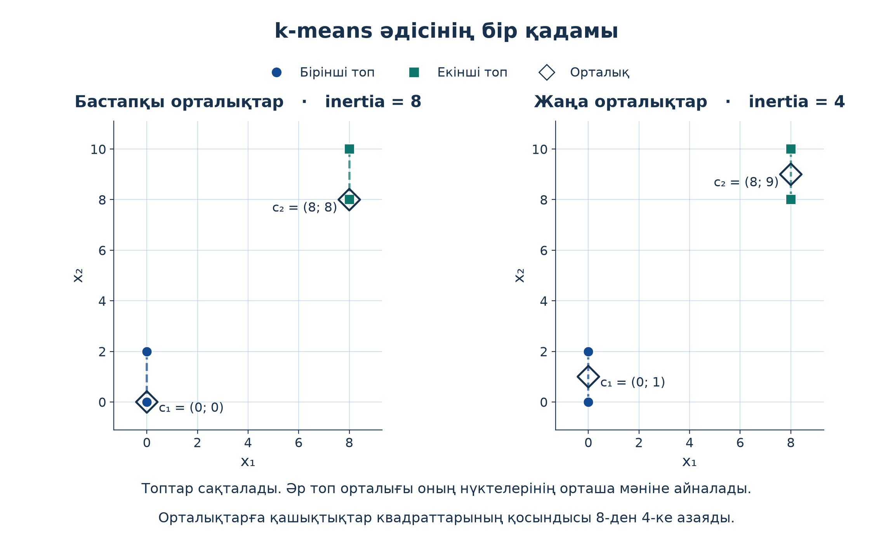
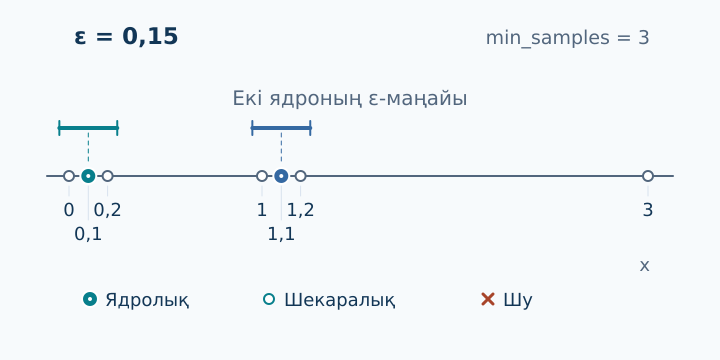
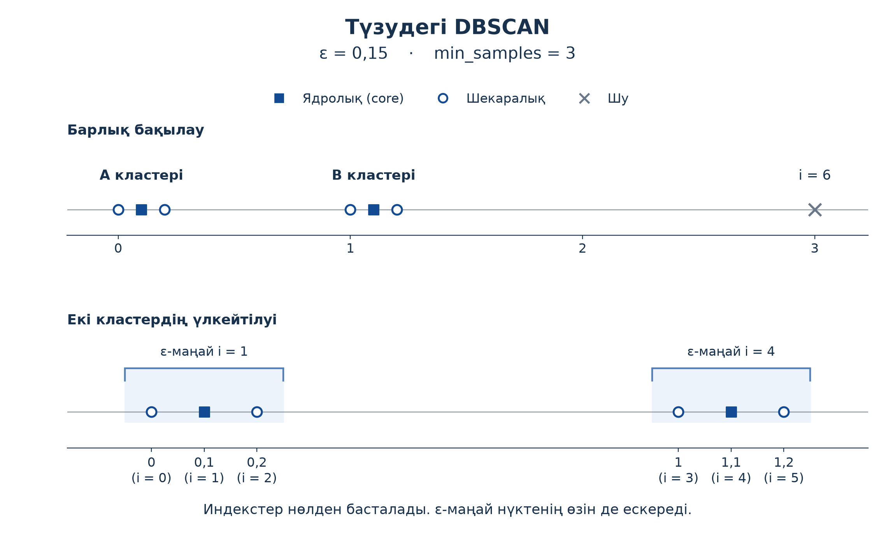
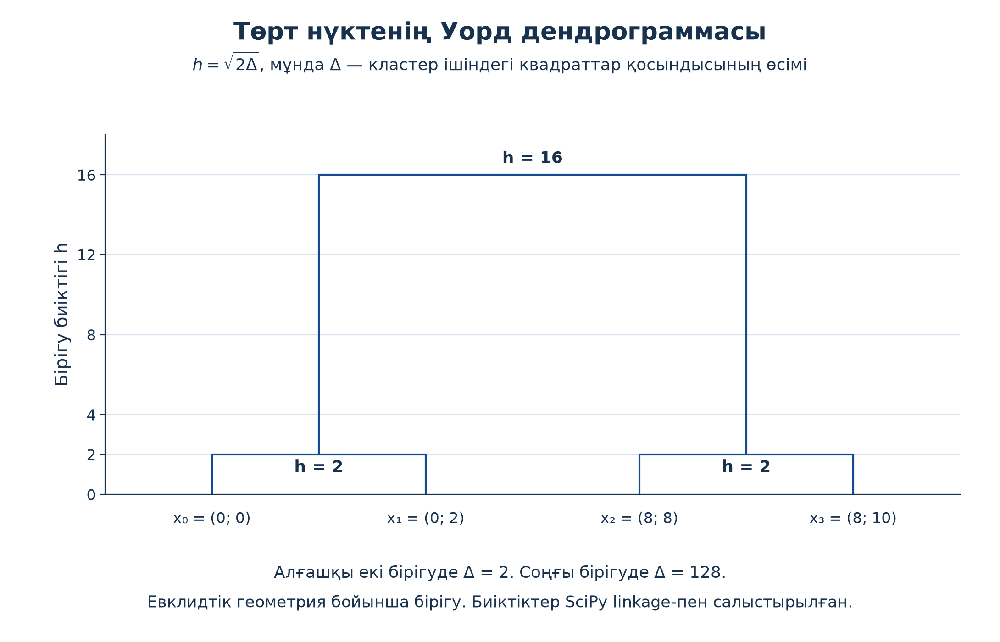
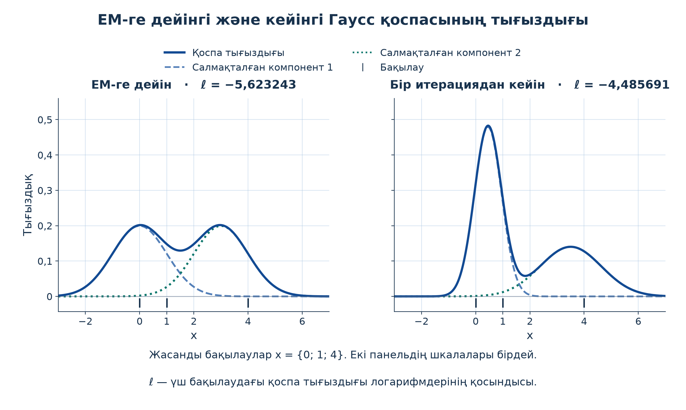
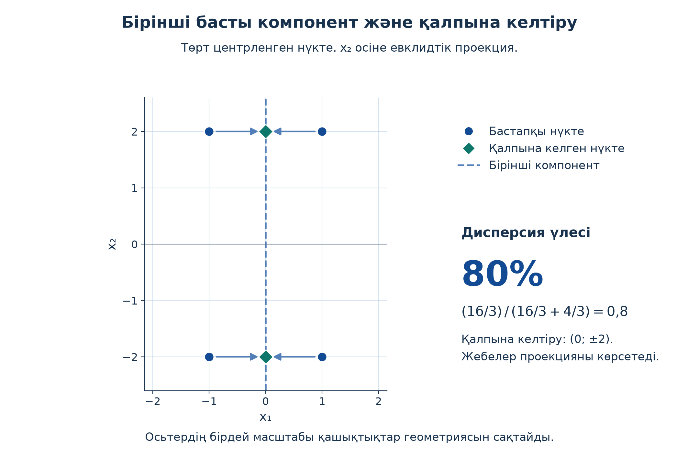
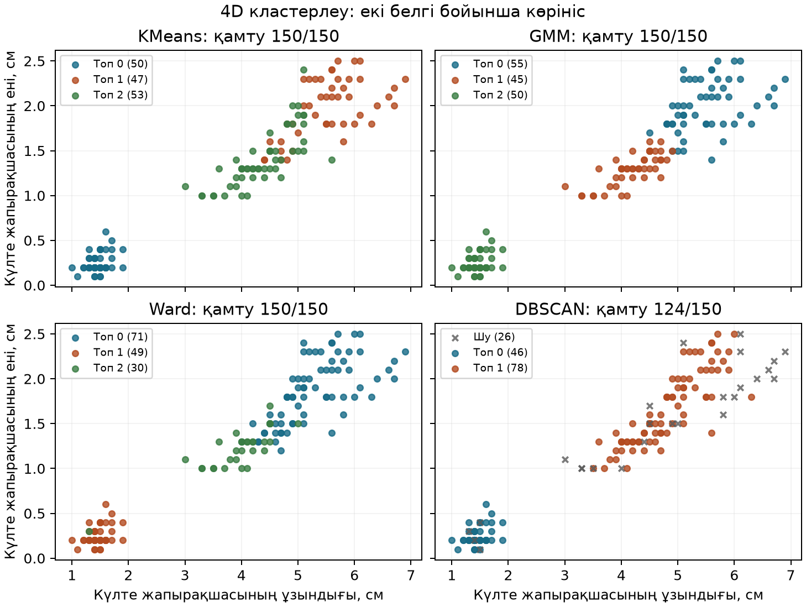
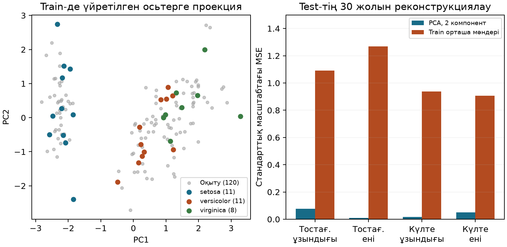

8-тарау. Мұғалімсіз оқыту: кластерлеу және деректердің өлшемділігін азайту
8.1 Тақырып бағдаршысы
Технологиялық қондырғы мұрағатында температура, қысым және жүктеме туралы жазбалар бар. Бақылаулардың бір бөлігі өзара ұқсас, алайда жұмыс режимдерінің сенімді белгілері әзірге жоқ. Инженер талдауға тән жазбаларды таңдау үшін күйлер топтарын іздей алады. Сондай-ақ бірнеше датчиктің өзара байланысты өзгерістерін бір диаграммада зерттеу үшін көрсеткіштердің ықшам көрінісін құра алады. Бірінші жағдайда нәтиже — топтарға бөлу, екіншісінде — жаңа координаталар. Топтар мен координаталар мұрағатқа қандай көрсеткіштер енгеніне және олардың қалай өңделгеніне тәуелді.
Тараудың мақсаты — мақсатты белгілерсіз деректердегі құрылымды іздеу әдістерін меңгеріп, олардың міндеттің қай бөлігін шешетінін тексеруді үйрену. Оқығаннан кейін студент k-means әдісінің бір қадамын есептей алады, DBSCAN-нің ядролық және шекаралық нүктелерін анықтайды, Уорд дендрограммасын оқиды, Гаусс қоспасындағы бақылаулардың жұмсақ үлестірілуін түсіндіреді және бақылауды оның басты компоненттері бойынша қалпына келтіреді. Зертханалық жұмыста осы әдістер Iris өлшемдеріне қолданылады. Түр белгілері оқытудан кейін сыртқы ақпарат ретінде пайдаланылады. Мұндай реттілік өлшемдер геометриясын белгілі таңбалаумен салыстыруға мүмкіндік береді.
Жұмысқа орташа мән, дисперсия, евклидтік қашықтық және белгілерді матрица түрінде көрсету қажет. Алдын ала өңдеу 2-тарауға, бөлу және кейінге қалдырылған деректерді оқшаулау ережелері 5 және 7-тарауларға сүйенеді. Қоспа үшін шартты ықтималдық пен шындыққа ұқсастық қажет. PCA үшін скаляр көбейтінді, меншікті вектор және матрицаларды көбейту керек. Қолмен орындалатын мысалдарда алгоритм қадамын кітапханасыз тексеруге болатындай аз нүкте пайдаланылады.
Негізгі ұғымдар — центроид (centroid), кластер ішіндегі квадраттар қосындысы (within-cluster sum of squares), маңай радиусы, ядролық нүкте (core point), дендрограмма (dendrogram), қоспа компонентінің жауапкершілігі (responsibility), басты компонент (principal component), түсіндірілген дисперсия (explained variance) және қалпына келтіру қатесі (reconstruction error). Тарау соңында тақырыптың силлабустың бірінші әкімшілік модуліне қалай кіретіні және оның қорытынды тестілеуі нені тексеретіні көрсетілген.
8.2 k-means және центроидтар геометриясы
8.2.1 Объект, белгі және қашықтық бірлігі
X матрицасының жолдары объектілерді, ал бағандары өлшенген белгілерді көрсетсін. Әр жолды өлшемділігі d кеңістіктегі нүкте деп қарастыруға болады. Қай жолдарды жақын деп санау туралы шешім белгілер мен масштабты таңдаудың өзінде қабылданады. Егер температура градустың ондық үлестерімен, ал қысым бармен жазылса, координаталарды бастапқы бірліктерде салыстыру температураға артық салмақ береді. Стандарттау кезінде координатаның үлесі оның стандарттық ауытқуының бірліктерімен өрнектеледі. Онда шуы аз датчиктің сирек үлкен ауытқуы қашықтықты едәуір өзгертуі мүмкін. Түрлендірудің себебін міндетпен байланыстырып, есепте тіркейді.
Евклидтік қашықтық сандық көріністі талап етеді. Егер «іске қосу», «жұмыс» және «тоқтату» режимдеріне 0, 1 және 2 сандары берілсе, жасанды рет пен режимдер арасындағы белгіленген қашықтықтар пайда болады. Категориялық белгі үшін категориялардың сәйкестік мағынасын көрсететін кодтау немесе өлшем таңдалады. k-means үшін қашықтық пен орташа мәнді есептеу амалы өзара үйлесімді болуы тиіс. Дұрыс кодтағанның өзінде орталықтың индикаторлар бойынша бөлшек мәндері болуы мүмкін. Мұндай орталық топтағы үлестерді сипаттайды, ал оған ең жақын жол нақты бақыланған жеке объект ретінде қызмет ете алады.
Кластерлеу бақылау бірлігі жөнінде келісуді талап етеді. Егер ұзақ тұрақты режимнің әр секунды жеке жазылса, ал қысқа өтпелі режим бірнеше нүктемен берілсе, SSE-де бірінші режимге көбірек қосылғыш сәйкес келеді. Режимдерді талдау үшін бір секундтың және бір-бірімен қабаттаспайтын бір терезенің, мысалы температураның орташа мәні мен ауқымы арқылы берілген көріністерін салыстыруға болады. Бұл міндетті өзгертеді, себебі басқа объектілер кластерленеді. Экспериментті қайталау үшін терезелерді таңдау ережесі мен белгілердің бірліктерін сақтау керек.
8.2.2 Критерий және екі қадам
k-means топтар санын k деп беріп, k орталықты іздейді. Матрица жолын xᵢ, оның тобының индексін cᵢ, j тобының орталығын μⱼ арқылы белгілейік. Кластер ішіндегі квадраттар қосындысы J жолдардың тағайындалған орталықтардан жиынтық ауытқуын өлшейді.
Қашықтық квадраты әр объект үшін бірдей салмақпен қосылады. Мысалы, бір нүктенің орталығынан қашықтығын екі есе арттыру оның үлесін төрт есе арттырады. Осы себепті ауытқыма орталықты ығыстырып, қалыпты бақылаулардың тағайындалуын өзгерте алады. scikit-learn кітапханасының KMeans класында fit әдісіне берілген деректердегі критерий мәні inertia_ арқылы қолжетімді. Салмақтар пайдаланылса, бұл — салмақталған қосынды. Бұдан кейінгі қол есептерінде салмақтар бірдей және бірге тең.
Тағайындау қадамында орталықтар бекітіліп, әр i үшін қашықтық квадраты ең аз болатын индекс таңдалады. Егер минимум бірден бірнеше орталықта алынса, алгоритмге теңдікті шешу ережесі қажет.
Жаңарту қадамында тағайындаулар бекітіліп, әр бос емес Cⱼ тобындағы орташа мән есептеледі. Бұл мән оның барлық жолдарына дейінгі қашықтықтар квадраттарының қосындысын азайтады. xᵢ−μ шамасын орташа мәннен ауытқу мен орташа мәннің μ-ден айырмасының қосындысына жіктеу жеткілікті. Қосу кезінде аралас мүше жойылады. Тұрақты бөлік пен μ-ден орташаға дейінгі қашықтық квадратының топ көлеміне көбейтіндісі қалады.
Ережелері бекітілген екі дәл қадам жаңартылатын барлық топтар бос емес болғанша J мәнін арттырмайды. Бос топ үшін 8.3 формуласы анықталмаған. Нақты іске асыру бұл жағдайды, мысалы орталықты қайта тағайындау арқылы өңдеуі тиіс. Әдеттегі қолдануда рұқсат етілетін ауытқу мен итерациялардың ең көп саны да беріледі. Ерте тоқтағанда орталықтар мен белгілердің мәндерін кітапхана ережелерін ескеріп түсіндіру керек. Қадамдарды алмастыру кезінде критерийдің кемуі әртүрлі бастапқы мәндер үшін әртүрлі нәтижелерге жол береді.
8.2.3 Төрт нүктедегі бір қадам
Есептік мысал 8.1. Орталықтарды тағайындау және жылжыту.
A=(0, 0), B=(0, 2), C=(8, 8) және D=(8, 10) төрт нүктесін қарастырайық. Бастапқы орталықтар μ₁=A және μ₂=C. A үшін екі орталыққа дейінгі қашықтық квадраттары 0 және 128-ге тең. B үшін олар 4 және 100, C үшін — 128 және 0, D үшін — 164 және 4. Сондықтан A мен B бірінші топтың, C мен D екінші топтың нөмірін алады. Бастапқы J мәні 0+4+0+4=8.
Қайта есептеуден кейін μ₁=(0, 1) және μ₂=(8, 9) алынады. Төрт нүктенің әрқайсысы өз орталығынан бір бірлік қашықта орналасқан. Критерий 4-ке тең. Келесі қадамда тағайындаулар сақталады, сондықтан орташа мәндер өзгермейді. 8.1-суретте бақылаулардың өзінде орналасқан бастапқы орталықтар мен олардың арасындағы жаңа орталықтар көрінеді. Екінші топтың екі координатасының да мәндері едәуір жоғары болғанымен, топ ішіндегі қашықтықтары бірінші топпен бірдей.

Дереккөз: төрт жасанды нүкте бойынша авторлық есеп. Үзік сызық топ орталығына дейінгі қашықтықты көрсетеді.
Тәжірибеде бастапқы орталықтар жиі k-means++ тәсілімен таңдалады: ол бастапқы нүктелерді бұрын таңдалғандарын ескеріп, кеңістікке орналастырады. Әртүрлі бастапқы мәндермен бірнеше іске қосу бірнеше нәтиже береді, олардың ішінен J мәні төменін сақтауға болады. n_init пен random_state көрсету экспериментті қайталауға көмектеседі. Өте үлкен іріктемелерде MiniBatchKMeans орталықтарды ішкі іріктемелер бойынша жаңартып, сол қолданбалы міндеттің жуық шешімін береді. Толық әдіс пен ішкі іріктемелерге сүйенетін нұсқаның J айырмасы тек бірдей белгілер матрицасында ғана мағыналы.
8.2.4 Топтар саны және қолданылу шектері
k артқанда қолжетімді ең аз J өспейді. Мысалы, орталық қосу бұрынғы топтардың бірін бөліп, орташа мәндерді қайта есептеуге мүмкіндік береді. Орталықтар саны жеткілікті болғанда, әрбір әртүрлі нүктеге жеке орталық тағайындауға болатын болса, критерий нөлге айналады. Сондықтан барлық үлкен k арасындағы ең аз J өздігінен мазмұнды топтар санын таңдамайды. J-дің k-ға тәуелділік графигінен кему баяулайтын аралықты іздеп, нұсқаларды орнықтылығы, ықшамдығы және қолданбалы түсіндірмесі бойынша салыстыруға болады. Егер иілу нүктесін ажырату қиын болса, бақыланған қисықтың бұл қасиетін ашық көрсету керек.
Ең жақын орталық кеңістікті қашықтықтардың жұптық теңдігімен берілген сызықтық шекаралары бар аймақтарға бөледі. Бір-бірімен айқасқан екі жарты айды деректер пішініне сай ажырату үшін әр доғаға бірнеше орталық қажет болуы мүмкін. Дисперсиялары әртүрлі топтар да күтпегендей бөлінуі мүмкін. Үлкен шашыраңқы топ J-ге елеулі үлес қосады да, маман оны бір режим деп санағанымен, оны бөлуге ынта туады. Бірнеше әдісті салыстыру бақыланған топтарды қандай геометриялық жорамал қолдайтынын анықтауға мүмкіндік береді.
Жаңа объект үшін KMeans.predict сақталған ең жақын орталықтың индексін қайтарады. Бұл кезде масштабтау бұрын есептелген параметрлерді пайдалануы тиіс. Пайдалану жағдайлары өзгерсе, жаңа кезеңдер үшін орталықтарға дейінгі қашықтықтар мен тағайындаулар үлестерін бақылауға болады. Алдын ала өңдеу кеңістігінде барлық орталықтан алыс жатқан жарамды жол да тағайындау алады. Жаңа режимдерді белгілілерінен ажырату үшін ауытқу критерийін бөлек анықтап, оны деректерде тексеру қажет. DBSCAN мен дендрограмма үшін ұқсас ереже дербес жобалық шешімді талап етеді.
8.3 DBSCAN және тығыздық маңайлары
8.3.1 Жергілікті критерий
DBSCAN (density-based spatial clustering of applications with noise) кейбір нүктелерінің маңында жеткілікті көрші болатын байланысқан аймақтарды іздейді. Алдын ала eps пен min_samples параметрлеріне сәйкес ε радиусы мен m шегі беріледі. Салмақталмаған жағдайда ε-маңайға тексеріліп отырған жолдың өзін қоса алғанда, қашықтығы ε-ден аспайтын барлық жол кіреді. Осы маңайдағы жолдар саны m-ге жетсе, нүкте ядролық деп аталады.
Тығыз топтарды анықтау үшін ойша ядролық нүктелерден граф құрылады. Егер ядролық нүктелер арасындағы қашықтық ε-ден аспаса, олар қырмен қосылады. Осы графтың әр байланысқан компоненті бір кластердің ядросын құрайды. Кейін ядролық нүктелердің ε-маңайында жатқан ядролық емес нүктелер қосылады. Олар шекаралық деп аталады. Қалғандары шу белгісін алады. Осылайша кластер бір радиустан әлдеқайда алысқа созылуы мүмкін. Ядролық нүктелер арасындағы қысқа қадамдар тізбегі иілген аймақ бойындағы байланыстылықты береді.
Шекаралық нүкте кластерге қатысады, бірақ ядролық қолжетімділік тізбегін жалғастырмайды. Кейде ол екі кластер ядроларынан да ε-ден аспайтын қашықтықта жатады. Онда қосудың екі нұсқасы да геометриялық тұрғыдан жарамды, ал іске асыру нәтижесі объектілерді өңдеу ретіне тәуелді болуы мүмкін. Кластер нөмірлері де еркін. Іске қосулар арасындағы нәтижелерді жолдардың бірге тиесілілігі бойынша салыстырып, шу мен шекараның бірмәнді емес жағдайларын бөлек белгілеген дұрыс.
8.3.2 Бір ось бойымен қолмен өту
DBSCAN маңайының кластерлерге әсері
Бір осьте жеті бақылау берілген. Ядролық нүктенің ε-маңайында нүктенің өзін қоса алғанда кемінде үш бақылау болуы керек.

ε=0,15 болғанда 0,1 мен 1,1 нүктелерінің әр маңайында үш бақылау бар. Сондықтан бұл екі нүкте ядролық.
Барлық қадамның мәтіні
- Ядроларды анықтау — ε=0,15 болғанда 0,1 мен 1,1 нүктелерінің әр маңайында үш бақылау бар. Сондықтан бұл екі нүкте ядролық.
- Шекара мен шуды ажырату — 0 және 0,2 бірінші ядроға, 1 және 1,2 екінші ядроға көрші. Олар шекаралық нүктелер болады. 3 нүктесі ешбір ядроға көрші емес және шу болып қалады.
- Маңайды кеңейту — ε=0,85 болғанда 0,2 мен 1 арасындағы 0,8 аралығы маңайға кіреді. Екі үштік бір кластерге бірігеді. 3 нүктесі шу болып қалады.
- Маңайды тарылту — ε=0,09 болғанда әр нүкте маңайында тек өзі қалады. Ядро табылмайды, сондықтан жеті нүктенің бәрі шу деп белгіленеді.
Есептік мысал 8.2. Ядролар, шекаралар және шу.
Бақылаулар 0, 0,1, 0,2, 1, 1,1, 1,2 және 3 болсын. ε=0,15 және m=3 деп берейік. 0,1 нүктесінің 0 және 0,2 көршілері бар. Нүктенің өзін қосқанда үш объект шығады, сондықтан 0,1 — ядролық. 0 нүктесінің маңайында тек өзі мен 0,1 ғана бар. Ол 0,1 ядросының маңайына кіретіндіктен шекаралық болады. Сол сияқты 0,2 осы топтың екінші шекарасында орналасқан.
Екінші үштіктің маңай көлемдері де 2, 3 және 2. Мұндағы тығыз аймақтың орталығы — 1,1. Соңғы 3 бақылауының маңайында тек өзі ғана бар. Ол ешбір ядролық нүктемен көршілеспейді де, −1 белгісін алады. Жолдардың бастапқы реті үшін scikit-learn іске асыруының белгілері [0, 0, 0, 1, 1, 1, −1] болады. 8.2-суретте ядролар түсі мен пішіні арқылы ерекшеленген. Көрсетілген ε-маңайлардың ұзындығы 2ε және олар 8.4 формуласындағы шартты тексеруге мүмкіндік береді. Топтың ең сол жақ нүктесінен ең оң жақ нүктесіне дейінгі қашықтық 0,2-ге тең және ε-ден үлкен. Соған қарамастан, екеуі де ядро арқылы топқа тиесілі.

Дереккөз: авторлық есеп. Индекстеу нөлден басталады. Үлкейтілген бөлік екі ядролық нүктенің ε-маңайларын көрсетеді.
Егер ε мәнін 0,09-ға дейін азайтса, мысалдағы әр нүктеде тек өзі ғана қалады. Ядролар жойылады. Егер ε мәнін 0,85-ке дейін арттырса, екі үштік арақашықтығы 0,8-ге тең 0,2 және 1 нүктелері арқылы қосылады. Бұл нүктелер ядролық болу үшін жеткілікті көрші алады. 3-тен ең жақын 1,2 бақылауына дейінгі қашықтық 1,8 болғандықтан, ол шу болып қалады. ε таңдау қандай тығыздықты жеткілікті деп санауды және қандай аралықтарды топтар арасындағы үзіліс деп тануды анықтайды.
8.3.3 Параметрлер, қамту және қолдану
eps пайдаланылатын қашықтық бірліктерімен өрнектеледі. Бастапқы шкаланы стандартталған шкалаға ауыстырған соң бұрынғы ε саны әдетте басқа маңайды береді. min_samples жергілікті тығыздық шегін белгілейді, бұл ретте scikit-learn іске асыруында ядро өз жолын да ескереді. Бағдар алу үшін көршілерге дейінгі қашықтық графигі құрылса, іздеуге объектінің өзі енгізілгенін жазып, көрші нөмірін шекпен келісу қажет. Мысалы, m=5 кезінде объектінің өзі ескерілсе, ол және тағы төрт жол керек. Алынған қисық параметрлерді ұсынуға және көршілес мәндерді салыстыруға көмектеседі.
DBSCAN нәтижелерін топтар санымен, шуға жатпайтын нүктелер үлесімен және ε аздап өзгергенде осы шамалардың орнықтылығымен сипаттау ыңғайлы. Бір ортақ радиус тығыз топтарды аралық объектілер тізбегі арқылы қосуы мүмкін. Тығыздықтар едәуір әртүрлі болса, ε-нің бір мәні сирек топты шу күйінде қалдырады немесе жақын тығыз топтарды біріктіреді. Нақты бір жиын үшін мұны компоненттердің көлемдері мен орналасуын салыстыру арқылы зерттеуге болады. Жоғары өлшемділікте қашықтықтар ең жақын көршілерді қалғандарынан нашар ажыратуы мүмкін, сондықтан белгілер жиыны тығыздық параметрлерімен бірге тексеріледі.
Шу белгісі таңдалған көріністегі жергілікті тығыздықты көрсетеді. Ол сирек жұмыс режимін, өлшеу қатесін немесе іріктемеде аз берілген аймақты көрсетуі мүмкін. Бұл себептерді алгоритм белгісі бойынша ажырату мүмкін емес. DBSCAN.fit орындалған соң бөлу labels_ ішінде сақталады, ал fit_predict белгілерді қайтарады. Жаңа жазбаларды сақталған топтарға қатысты тағайындау үшін жобалаушы бірмәнді емес және алыс жағдайларды қоса алғанда, ережені бөлек беріп, тексереді. Кеңейтілген іріктемеде DBSCAN-ді қайта іске қосу бұрынғы тағайындауларды өзгертуі мүмкін, себебі маңайлар графы өзгереді.
8.4 Агломеративтік иерархия және Уорд әдісі
8.4.1 Жеке объектілерден ағашқа дейін
Агломеративтік әдіс (agglomerative clustering) әр жолға біреуден n кластерден бастайды. Әр қадамда байланыс ережесі бойынша топтар жұбы таңдалып, кейін жұптың орнына олардың бірлестігі сақталады. Толық ағашта n−1 бірігу бар. Дендрограмма бірігулердің реті мен критерий шамасын көрсетеді. Жапырақтар бастапқы объектілерді білдіреді. Жапырақтардың солдан оңға орналасуы ағашты оқуға ыңғайланып таңдалады, суреттегі көршілікті тармақтармен және олардың биіктіктерімен бірге түсіндіру керек.
Қорытынды бөлуді алудың бір тәсілі — биіктіктер арасынан көлденең сызық жүргізіп, сызық қиып өткен әр тармақты топ деп қарастыру. Басқа тәсіл — берілген бірігулер санынан кейін тоқтау. Биіктіктер тең болғанда бұл айырмашылық маңызды. Егер екі бірігу 2 биіктікте болса, 2-ден сәл жоғары кез келген кесу екеуін де қамтиды. Төрт нүктеден дәл үш топ алу үшін бірінші бірігуден кейін тоқтауға болады, бірақ критерий теңдігін және қай жұптың біріктірілгенін хабарлау керек.
Жалғыз байланыс (single) ережесі екі топ жолдарының арасындағы ең аз қашықтықты пайдаланады. Бірнеше аралық объект алыс тығыз аймақтарды байланыстыра алады. Толық байланыс (complete) ең үлкен қашықтықты пайдаланып, объектілердің ең алыс жұбына талап қояды. Орташа байланыс (average) барлық топаралық жұптар бойынша орташа мәнді алады. Бұл кезде көлемдер мен қашықтықтардың үлестірімдері салыстыруға әсер етеді. Уордты топтар ішіндегі квадраттар қосындысының өсімі қызықтырады. Оның критерийі евклидтік геометриямен үйлеседі. Байланысты қандай бірігуді мазмұнды деп санауға сүйеніп, саналы таңдауға болады.
8.4.2 Уорд неге SSE өсімін салыстырады
Екі топты A және B, олардың орталықтарын μₐ және μᵦ арқылы белгілейік. Бірігуден кейінгі топ ішіндегі квадраттар қосындысы бұрынғы топішілік ауытқулардан және орталықтарды ортақ нүктеге жылжыту шығындарынан құралады. Формуланы алу үшін A-дағы әр x-тің μₐ-дан ауытқуына μₐ мен ортақ орташа мәннің айырмасын қосамыз. Аралас мүшелер қосындысы нөл, себебі μₐ-дан ауытқулар қосындысы нөлге тең. B үшін де пайымдау осындай. Ортақ салмақталған орташа мәнді қойып, өсім формуласын аламыз.
Орталықтар арасындағы қашықтық бірдей болғанда өсім топ көлемдеріне тәуелді. Екі ірі топты біріктіру екі шағын топты біріктіруден қымбат болуы мүмкін. Уорд әдісі ағымдағы өсімі ең аз жұпты таңдайды. Бұрын орындалған бірігу ағаштың бөлігі болып қалады. k-means әдісінде объектілер кезекті тағайындау қадамында топтар арасында ауыса алады. Сондықтан екі әдіс те квадраттар қосындысымен жұмыс істейді, бірақ іздеуге әртүрлі шектеулер қояды және бірдей k кезінде әртүрлі топтар беруі мүмкін.
Есептік мысал 8.3. Екі жергілікті бірігу және бір үлкен секіріс.
A=(0, 0), B=(0, 2), C=(8, 8) және D=(8, 10) нүктелеріне оралайық. A мен B үшін қашықтық квадраты 4, көлемдері бірге тең, сондықтан өсім 2-ге тең. C мен D үшін де өсім осындай. Алғашқы екі бірігу {A, B} және {C, D} жұптарын құрады, әрқайсысында SSE 2-ге тең. Екі жұптың ортақ орташа мәні — (4, 5). Біріккен топта A, B, C және D үлестері 41, 25, 25 және 41. Олардың қосындысы 132 болады. Бұрынғы 4-ті алып тастап, Δ=128 аламыз. Дәл осы жауапты 8.5 формуласы береді: көбейткіш 2·2/(2+2)=1, ал орталықтар айырмасының екі координатасының да модулі 8-ге тең.
scipy.cluster.hierarchy.linkage ішінде ward әдісі үшін бірігу биіктігі √(2Δ) ретінде өлшенеді. Осы мысалда екі бастапқы биіктік 2-ге, соңғы биіктік 16-ға тең. 16 шамасы SSE өсімінің өзінен өзгеше. Бұл айырмашылық тік осьтегі сандардың мағынасын елеулі өзгертеді. 8.3-суреттегі дендрограмма бойынша 8 биіктікте кесу арқылы екі жұпты қалпына келтіруге болады. Екі графикті салыстыру үшін кітапхана қандай шкаланы көрсететінін және әр ағаш деректердің қандай көрінісінде құрылғанын білу қажет.

Дереккөз: SSE өсімін авторлық есептеу және scipy.cluster.hierarchy.linkage арқылы салыстыру. 2, 2 және 16 биіктіктері √(2Δ)-ға тең.
8.4.3 Нені салыстыруға болады
Алдымен алгоритмнен қандай нәтиже керегін жазған пайдалы. Бірнеше тән орталық пен жаңа жолдарды тағайындауға k-means қойылымы қолайлы. Құрылым жергілікті тығыздыққа тәуелді болса және жолдардың бір бөлігін топсыз қалдыру қажет болса, DBSCAN-ді қарастырған пайдалы. Бірнеше масштабтағы кіріккен топтарды салыстыру керек болса, бірігулер ағашын сақтауға болады. Гаусс қоспасы тығыздық моделі мен компоненттерге тиесіліліктің шартты ықтималдықтарын береді, ал PCA өлшемділігі аз координаталар құрады. 8.1-кестеде осы нәтижелер алынатын амалдар салыстырылған.
8.1-кесте. Мұғалімсіз оқыту әдістерінің нәтижелері мен шектеулері
| Әдіс | Оқытуға дейін не беріледі | Не алынады | Түсіндіруде не тексеріледі |
|---|---|---|---|
| k-means | k, белгілер, масштаб, бастапқы мәндер | Орталықтар, тағайындаулар, топ ішіндегі SSE | Ықшамдық, ауытқымалар үлесі, бастапқы мәндерге орнықтылық |
| DBSCAN | ε, көршілер саны, қашықтық өлшемі | Тығыз топтар, ядролар, шекаралық нүктелер және шу | Қамту, ε-ге сезімталдық, аймақтар арасындағы өтулер |
| Агломеративтік әдіс | Байланыс ережесі мен өлшемі, кесу тәсілі | Бірігулер иерархиясы және таңдалған бөлу | Биіктік шкаласы, теңдіктер, тармақтар құрамының орнықтылығы |
| Гаусс қоспасы | Компоненттер саны, ковариация пішіні, бастапқы мәндер | Қоспа тығыздығы және компоненттер жауапкершіліктері | Қабаттасу, азғындау, модельдің деректер пішініне сәйкестігі |
| PCA | Белгілер масштабы және компоненттер саны | Жаңа координаталар және сызықтық қалпына келтіру | Сақталған дисперсия және қалпына келтіру қатесі |
Критерийлерді салыстыру бір қойылым аясында мағыналы. Топішілік SSE таңдалған белгілер масштабындағы ауытқулар квадраттарын қосады. Шу үлесі — шу белгісі бар нүктелер санының барлық нүктелер санына қатынасы. Шындыққа ұқсастық пен қалпына келтіру қатесі басқа сұрақтарға жауап береді. Бөлулерді бір сыртқы метрика бойынша салыстырғанда объектілердің ортақ популяциясы мен шумен жұмыс істеу ережесін беру керек. 8.7-бөлімде бұл шешімдер Iris түр белгілерін қарағанға дейін бекітіледі. Алдымен топтың ықтималдық сипаттамасы не қосатынын бағалайық.
8.5 Gaussian Mixture және EM алгоритмі
8.5.1 Кластер ықтималдық моделінің компоненті ретінде
Орталыққа жақындық — объектілер тобын сипаттаудың бір тәсілі. Басқа тәсіл бақылаулар бірнеше үлестірімнен пайда болады деген жорамалға негізделеді. Әр үлестірімнің өзіндік орны, шашырауы және жалпы жиынтықтағы салмағы бар. Гаусс қоспасы, немесе Gaussian Mixture Model, GMM, қалыпты компоненттері бар осындай ықтималдық моделін береді. Компоненттер қабаттасуы мүмкін: онда бір бақылау өзінің шығу тегінің бірден бірнеше түсіндірмесіне сай келеді.
Әр объект баған-векторымен беріліп, іріктемеде объект болсын. Компоненттер санын әзірге берілген деп санаймыз. Параметрлерді арқылы белгілейік: бұлар — салмақтары, орташа мән векторлары және ковариация матрицалары. Әрі қарай қарастырылатын формулаларда салмақтар оң және қосындысы бірге тең, ал ковариация матрицалары симметриялы әрі оң анықталған. Қоспаның тығыздығы мынадай
Модельді екі сатылы тетік түрінде көрсетуге болады. Алдымен компоненттің жасырын нөмірі ықтималдықтарымен таңдалады. Содан кейін таңдалған қалыпты үлестірімнен белгілер векторы алынады. Біз -ді көреміз, бірақ -ді көрмейміз. «Жасырын» сөзі модель айнымалысына қатысты: ол алгоритм қалпына келтіруге міндетті, оқытушыға белгісіз дұрыс таңбалау бар дегенді білдірмейді.
Компоненттің салмағы нақты объектіні бақылауға дейінгі ықтималдығын сипаттайды. Белгілер алынған соң бұл ықтималдық өзгереді. Сондықтан үлкен компонент кез келген бақылау үшін міндетті түрде шындыққа ең ұқсас бола бермейді. Сондай-ақ салмақты компонентке түпкілікті жатқызылған жолдар санымен теңестіруге болмайды: жұмсақ үлестіру кезінде бір объект бірнеше топқа бөлшек үлес қосады.
Үздіксіз белгілер үшін қалыпты үлестірім тығыздықпен беріледі
Мұнда индекссіз — математикалық тұрақты, ал — компонент салмағы. Экспонента көрсеткішіндегі квадраттық форма шашырау бағыттары мен масштабтарын ескереді. Ковариация матрицасының диагональ элементтері белгілер дисперсиялары болады; қалған элементтері олардың компонент ішіндегі бірлескен өзгергіштігін көрсетеді. Толық матрица созылған және бұрылған эллипсоидтық тығыздық аймақтарын сипаттауға мүмкіндік береді.
Нүктедегі тығыздық осы нүктенің ықтималдығы емес және бірден асуы мүмкін. Аймақтың ықтималдығы тығыздықты интегралдау арқылы алынады. Бірліктер өзгергенде белгілер мен параметрлерді үйлесімді түрлендіру қажет: тығыздық пен шындыққа ұқсастық логарифмінің сандық мәндері координаталарға тәуелді. Түрлендіруді ескермей, мұндай мәндерді деректердің әртүрлі көріністері арасында салыстыруға болмайды. Әр компонентінен өзгеше, тұтас қоспа әдетте бір қалыпты үлестірім болмайды.
Бір компоненттің геометриясы мен біріккен модель геометриясын ажыратқан пайдалы. Бір азғындалмаған қалыпты тығыздықтың деңгейлері эллипсоидтық пішінде болады, алайда бірнеше тығыздық қосындысы бірнеше максимум мен күрделірек аймақтар құра алады. Сондықтан GMM қолдану бүкіл іріктеме біртұтас симметриялы бұлтқа ұқсауы тиіс дегенді болжамайды. Сонымен бірге топтың кез келген күрделі пішінін бір компонент сипаттай алатынына кепілдік жоқ. Компоненттер санын арттыру сипаттау мүмкіндігін кеңейтеді, бірақ бағалау мен кейінгі мазмұндық түсіндіруді күрделендіреді.
8.5.2 E-қадам: жасырын нөмірлердің шартты үлестірімі
Егер компонент нөмірлері белгілі болса, орташа мәндер мен ковариацияларды тиісті топтар бойынша бағалауға болар еді. Егер параметрлер белгілі болса, Байес формуласы бойынша компонент нөмірлерінің ықтималдықтарын есептеуге болар еді. expectation–maximization, EM алгоритмі осы байланысты пайдаланады: жасырын айнымалылардың шартты үлестірімін және қоспа параметрлерін ретімен нақтылайды.
Бастапқы параметрлері жарамды үлестірім беруі тиіс. итерациясында E-қадам responsibilities, яғни компоненттердің бақылаулар үшін жауапкершіліктерін есептейді:
матрицасының өлшемі
. Оның жолында бір объектінің ықтималдықтар үлестірімі бар, сондықтан элементтері теріс емес және қосындысы бірге тең. Әр элемент ағымдағы параметрлерге шартталған. Бұл табылған кластерлеудің тұтастай дұрыстығының ықтималдығы да, қоспа параметрлерінің өз белгісіздігін бағалау да емес.
E-қадамда объектіні түпкілікті бір ғана компонентке беру талап етілмейді. Мысалы, және жауапкершілік мәндері бірмәнді еместікті сақтайды. Оларды мерзімінен бұрын нөл мен бірге алмастыру оқыту рәсімін өзгертеді. Қажет болса, қатаң нөмірді кейін ең үлкен жауапкершіліктің индексі ретінде алуға болады, бірақ мұндай нәтиже компоненттердің қабаттасуын жасырады. Максимумдар тең болса, теңдікті шешудің қосымша ережесі қажет.
Жауапкершіліктер тиесілілік индикаторларының шартты математикалық күтімдері болғандықтан, E-қадам кейінгі бағалау үшін бөлшек жеткілікті статистикалар жасайды. Компонент жауапкершілігінің артуы бақылаудың оның жаңа параметрлеріне ықпалының күшеюін білдіреді. Бұл кезде бақылаудың өзі көшірілмейді де, іріктемеден жойылмайды.
Ең ықтимал компоненттің орташа мәні евклидтік қашықтық бойынша әрдайым ең жақын бола бермейді. (8.8)-ге салмақ, ковариация матрицасы және объектінің орташа мәннен ауытқуы бірге қатысады. Кең және тар компонент бір қашықтықты әртүрлі бағалайды, ал нормалау көбейткіші үлестірім көлемін ескереді. Сондықтан орталықтарға кері қашықтықтарды жай нормалау арқылы дұрыс жауапкершіліктер алу мүмкін емес. Қабаттасудың да жеке маңызы бар: оқыту аяқталғаннан кейін де шекара маңындағы бақылаулар бірнеше компонентпен түсіндіріледі. Жауапкершіліктердің бүкіл векторын сақтау осы бірмәнді еместікті бір нөмірмен жасырудың орнына кейінгі талдауға беруге мүмкіндік береді.
8.5.3 M-қадам: бөлшек үлестер бойынша параметрлерді жаңарту
M-қадам бойы есептелген жауапкершіліктер бекітіледі. Объектілердің тиімді санын анықтап, салмақтар мен орташа мәндерді жаңартайық:
Тиімді сан әдетте бүтін емес. Барлық қосындысы -ге тең, осыдан жаңа салмақтардың нормалануы шығады. Жаңа орташа мән — компонент ықтималдығы бірінші болған бақылаулардың ғана орташа мәні емес, объектілердің салмақталған орташа мәні.
Әр компоненттің ковариация матрицасы жаңа орташа мәнді пайдаланып, бөлек жаңартылады:
Екі вектордың сыртқы көбейтіндісі матрицасын жасайды. Бөлімінде тұр, емес: бұл — іріктемелік ковариацияның ығыспаушылық талабы емес, шындыққа ұқсастықты барынша арттыруға арналған жаңарту. Жаңа орташа мән орнына ескісін қою жалпы жағдайда басқа матрица береді. Орташа мән мен ковариация жаңартулары арасында жауапкершіліктерді қайта есептеуге де болмайды: бір M-қадам жауапкершіліктердің бір бекітілген матрицасын пайдаланады.
Бұл жаңартулар қайдан шығады? Жасырын нөмірлер белгілі болғанда бірлескен тығыздық логарифмінде таңдалған компоненттердің салмақтары мен қалыпты тығыздықтары логарифмдерінің қосындысы бар. E-қадам нөмір индикаторларын олардың шартты математикалық күтімдерімен алмастырады. Алынған функциясы — осы логарифмдердің салмақтарымен алынған салмақталған қосындысы. Салмақтар бойынша олардың қосындысына шектеу қойып максимумдау үлестерін береді. Орташа мәндер бойынша максимумдау салмақталған орташа мәндерді, ал толық ковариациялар бойынша максимумдау нәтиже оң анықталған кезде (8.10) өрнегін береді.
Бұл өту алгоритмнің есептеу мағынасын түсіндіреді. Бастапқы бақыланатын мақсатта қосындының логарифмі әртүрлі компонент параметрлерін байланыстырады: әр объектінің үлесі бірден бүкіл қоспаға тәуелді. Жауапкершіліктер бекітілген соң ішінде компоненттерге арналған жеке салмақталған есептер пайда болады. Салмақтар қосындысына қойылатын шектеу ортақ болып қалады, бірақ ол айқын шешіледі. Аралық есептің мұндай ыңғайлылығы бастапқы есеп барлық параметр бойынша бір мезгілде дөңес дегенді білдірмейді. Қарапайым жаңартуларды қайталау іздеудің басталуына қарай әртүрлі нәтиже бере алады.
Толық M-қадамнан кейін жаңа E-қадамды бастауға болады. Бұл кезде компоненттер саны сақталады: берілген қоспаға арналған кәдімгі EM қанша компонент қалдыру керегін өзі шешпейді. Жеке толық ковариация туралы жорамал да маңызды. Барлық компонентке ортақ ковариация немесе диагональ матрицалар үшін тиісті шектеу және онымен үйлескен жаңарту қажет.
8.5.4 Толығымен есептелген бір итерация
Үш бақылаудан тұратын бірөлшемді жасанды іріктемесін қарастырайық. Бастапқы салмақтары , орташа мәндері және дисперсиялары болатын екі компонент берейік. Бұл — деректер бойынша параметр таңдаудың нәтижесі емес, бір итерацияның толық берілген басталуы. Мысалда алдын ала дұрыс таңбалау жоқ.
Бастапқы дисперсиялар бірдей болғанда екінші компонент тығыздығының біріншісіне қатынасы болады. Тең салмақтар қысқарады, сондықтан бірінші компоненттің жауапкершілігін ретінде есептеуге болады. Координатасы нөл объект үшін шамамен , бірлік үшін — , төрт үшін — аламыз. Екінші компонент жауапкершіліктері бұл мәндерді бірге дейін толықтырады.
8.2-кесте. Жасанды бірөлшемді бақылаулардағы EM-нің бір итерациясы
| Шама | Компонент 1 | Компонент 2 |
|---|---|---|
| үшін жауапкершілік | 0.989013 | 0.010987 |
| үшін жауапкершілік | 0.817574 | 0.182426 |
| үшін жауапкершілік | 0.000553 | 0.999447 |
| Тиімді сан | 1.807140 | 1.192860 |
| Жаңа салмақ | 0.602380 | 0.397620 |
| Жаңа орташа мән | 0.453637 | 3.504364 |
| Жаңа дисперсия | 0.251521 | 1.278096 |
Кесте мәндері оқуға ыңғайлы болуы үшін дөңгелектелген; кейінгі есептеулер дөңгелектелмеген сандармен орындалған. Мысалы, бірінші компоненттің жаңа орташа мәнінің алымы бірінші объектінің нөлдік үлесінің, екінші объекті жауапкершілігінің және үшінші объектінің төрт жауапкершілігінің қосындысына тең. шамасына бөлу береді. Координатасы төрт объект осы орташа мәнге аз оң салмақпен әсер етеді: оның үлесі қатаң тағайындаумен алынып тасталған жоқ.
Бірінші компонент үшін жаңа орташа мәннен ауытқулар квадраттарының салмақталған қосындысын оның тиімді санына бөлу береді. Екіншісі үшін ұқсас есеп береді. Бір дисперсия азайды, екіншісі артты. M-қадамның мақсаты барлық компонентті міндетті түрде сығу емес: параметрлер бақылаулардың ықтималдық түсіндірмесін үйлесімді жақсартуы тиіс.
Көлемді есептеудің екі тәсілінің айырмасына назар аударайық. Бастапқы жауапкершіліктер бойынша әр объектіні ең ықтимал компонентке қатаң тағайындасақ, көлемдер екі және бір болады. M-қадамда басқа шамалар пайдаланылды: шамамен және . Сондықтан екінің үшке қатынасы бірінші компоненттің жаңа салмағы емес. Бұл алшақтық жұмсақ тиесіліліктің анықтамасынан туындайды және есептеу қатесі емес. Атап айтқанда, координатасы бір бақылау ең ықтимал нөмірі бірінші болса да, үлесінің елеулі бөлігін екінші компонентке берді.
Бір қоспадан алынған тәуелсіз бақылаулар үшін бақыланған деректердің шындыққа ұқсастық логарифмі мынаған тең
Барлық есептеуде натурал логарифм пайдаланылады. Бастапқы параметрлерді қою береді. Толық жаңартудан кейін аламыз. Өсім шамамен . Теріс сандардың ішінде екіншісі біріншісінен үлкен: бақыланған шындыққа ұқсастық логарифмі артты. Бір объектіге шаққандағы орташа мәндер тиісінше шамамен және болар еді; қосындыны орташа мәнмен бір шкала ретінде салыстыруға болмайды.
Бұл тексеру оқытудың аяқталғанын білдірмейді. Келесі итерация жаңа жауапкершіліктерді жаңа салмақтар, орташа мәндер мен дисперсиялар бойынша есептейді. Сондай-ақ бақыланатын шындыққа ұқсастық логарифмі -ден өзгеше: (8.11)-де алдымен салмақталған тығыздықтар қосылады, содан кейін логарифм алынады. Осы ретті логарифмдердің салмақталған орташа мәнімен алмастыру басқа шаманы есептейді.
(8.11)-дегі тәуелсіздік жорамалы белгілердің бар-жоғына емес, деректердің ықтималдық сипаттамасына қатысты. Мысалы, бір құралдың көп мәрте алынған дерлік бірдей өлшемдері міндет кластерлеу деп аталғандықтан ғана тәуелсіз болмайды. Жолдар бойынша қосынды есептелетін критерий болып қала алады, алайда оның статистикалық түсіндірмесі мен жаңа деректерде тексерілуі бақылауларды алу тәсілін ескеруі тиіс. Мұғалімсіз оқыту байланысты объектілерді бөлу және белгілердің уақыт бойынша қолжетімділігі талаптарын жоймайды.

Дереккөз: жасанды деректер бойынша авторлық есеп. Жіңішке қисықтар қоспаның салмақталған компоненттерін көрсетеді.
8.5.5 Монотондылық неге кепілдік береді
Дәл EM-нің негізгі қасиеті — бақыланатын шындыққа ұқсастықтың кемімеуі. Оның тетігін қоспа логарифмінің төменгі шекарасы арқылы түсінуге болады. Жасырын нөмірлердің бекітілген үлестірімі үшін шекара күтілетін толық шындыққа ұқсастық логарифмі мен осы үлестірім энтропиясынан тұрады. Дәл E-қадамда ағымдағы параметрлердегі жасырын нөмірлердің шартты үлестірімі таңдалады: шекара мақсаттың ағымдағы мәніне тиеді. M-қадамда -дің артуы осы бекітілген шекараны арттырады. Сондықтан жаңа нүктедегі бақыланатын мақсат мәні бұрынғысынан төмен бола алмайды.
Қарастырылатын қоспада тұжырым дәл есептеулер мен жарамды ақырлы параметрлерге қатысты: салмақтар нормаланған, қажетті тиімді сандар оң, ковариациялар оң анықталған күйде қалады, шындыққа ұқсастық логарифмі ақырлы. Егер кәдімгі ковариациялық жаңарту азғындап, осы облыстан шықса, формулаларға орындалған жарамды M-қадам ретінде сүйенуге болмайды. Сондай-ақ дәлелдеуді кез келген өзгертілген рәсімге тексерусіз көшіруге болмайды. Қасиеттің негізі Dempster, Laird және Rubin-нің EM туралы бастапқы еңбегінде берілген.
Кемімеу әр итерацияда қатаң жақсаруды білдірмейді және глобал максимумға кепілдік бермейді. Әртүрлі бастапқы параметрлер әртүрлі шешімге әкелуі мүмкін; стационарлық та тиісті жинақталу шарттарын талап етеді. Мақсат мәндерінің тізбегі жоғарыдан шектелген болса, монотондылық сол мәндердің жинақталуын қамтамасыз етеді, бірақ өздігінен барлық параметрдің жинақталуын дәлелдемейді. Шектеусіз Гаусс қоспасында мақсаттың шектелуі алдын ала қамтамасыз етілмеген.
8.5.6 Азғындау, іздеудің басталуы және сандық шектеулер
Азғындау мәселесі бір өлшемнің өзінде көрінеді. Бір компоненттің орташа мәнін жеке бақылауға жақындатып, дисперсиясын нөлге қарай азайтуға болады, ал екінші компонент қалған нүктелерді түсіндіреді. Таңдалған бақылау маңында бірінші компоненттің тығыздығы шексіз өседі. Демек, оқытудағы үлкен шындыққа ұқсастық логарифмі өте орнықсыз модельмен қатар жүруі мүмкін; бастапқы есептің ақырлы глобал максимумы мүлде болмауы ықтимал.
Бірнеше өлшемде ұқсас мәселе компоненттің тиімді бақылаулары дерлік бір түзуде немесе өлшемділігі төмен жазықтықта жатқанда туындайды. Бағаланған ковариация нашар шартталған немесе сингуляр болады. Мұндай матрицаны кері айналдыру және анықтауышын есептеу қиындық туғызады. Объектілердің аз тиімді саны мен дерлік сәйкес белгілер тәуекелді күшейтеді. Диагностика орындалған итерациялар санын ғана емес, салмақтарды, ковариациялардың меншікті мәндерін және қайталама іске қосулардағы нәтиже орнықтылығын ескеруі тиіс.
Еркін ковариациялық параметрлер саны да маңызды. Толық симметриялы матрица үшін ол бір компонентке , ал диагональ матрица үшін — . Диагональ шектеу компонент ішіндегі көлбеу ковариациялық байланыстарды алып тастап, оның осьтерін таңдалған белгілерге бекітеді. Ол бағалау көлемін азайтуы мүмкін, бірақ дұрыс емес шектеу сипаттаманы нашарлатуы ықтимал. Матрица түрін есептеуді аяқтау мүмкіндігіне қарап қана таңдауға болмайды: оны бақылаулар санымен, белгілер мағынасымен және жоспарланған тексеру нәтижелерімен салыстыру қажет.
Бастапқы мәндерді беру іздеудің басталу нүктесін анықтайды. Бір-біріне тым жақын бастапқы орташа мәндер ұзақ уақыт бір аймақты сипаттап, екіншісін нашар беруі мүмкін. Алдын ала жоспарланған бірнеше іске қосу табылған шешімдерді ортақ қойылымда салыстыруға мүмкіндік береді, бірақ жергілікті іздеуді дәлелденген глобал іздеуге айналдырмайды. Бастапқы мән беру тәсілін, кездейсоқ тұқымды, іске қосулар санын және нәтиже таңдау критерийін жазу керек. Мақсат өсімі аз болғанда стандартты тоқтау жиынтықтың шын құрылымын анықтауды емес, сандық критерийдің орындалуын білдіреді.
Өте аз тығыздықтарда (8.8)-дің алымы мен бөлімін тікелей есептеу машиналық нөлдер беруі мүмкін. Орнықты іске асырулар логарифмдермен жұмыс істеп, log-sum-exp тәсілін пайдаланады. M-қадамға дейін жауапкершіліктерді дөңгелектеу де қауіпті: аз оң үлес нөлге айналып, тиімді санды жасанды нөлдеуі немесе ковариацияны өзгертуі мүмкін. Қол мысалында дөңгелектеу тек нәтижелерді көрсеткенде қолданылады.
Ақырлы белгілер мен жарамды оң бастапқы салмақтар үшін азғындалмаған Гаусс тығыздықтары математикалық тұрғыдан қатаң оң. Тиісінше барлық бастапқы жауапкершілік оң, бірақ кейбірі өте аз болуы мүмкін. Мұндай есептеудегі нөлдік тиімді сан машиналық дәлдікті немесе іске асырудың өзгертілген ережелерін анықтауды талап етеді. Компонент қайта инициализацияланса немесе жойылса, бұл — тіркелуге тиіс рәсімнің жеке шешімі. Ол (8.8)–(8.10) формулаларының байқалмайтын бөлігі емес және олардың математикалық кепілдіктерін автоматты алмайды.
8.5.7 scikit-learn ішіндегі GaussianMixture нәтижесін түсіндіру
Ағымдағы GaussianMixture API-де компоненттер санын n_components береді, ал covariance_type жеке толық, ортақ толық, жеке диагональ немесе сфералық ковариацияларды таңдайды. Шектеулер өрнектеу қабілеті мен бағаланатын шамалар санын өзгертеді. n_init бастапқы мәндер берулер санын белгілейді; оның әдепкі мәні бірге тең, сондықтан қосымша іске қосуларды айқын тағайындау керек. max_iter итерацияларды шектейді, tol тоқтатуға қатысады. Бұл параметрлер GaussianMixture ресми құжаттамасында сипатталған.
reg_covar параметрі жаңартылған ковариация диагоналіне теріс емес шама қосады; оң қосымша оның сингуляр болуына кедергі жасайды. Алайда (8.10)-ға қосу бұрынғы айыппұлсыз функциясының дәл максимизаторы болмайды. Сондықтан бастапқы мақсат монотондылығының дәлелін мұндай өзгеріске арналған дәлел деп автоматты санауға болмайды. Бұл сондай-ақ қосымшаны қорытусыз нақты байестік априорлық үлестірім деп атауға негіз емес. Қосу тетігі scikit-learn 1.9.1 бастапқы кодында тікелей көрінеді. Қосымша масштабы дисперсия бірліктерімен өрнектеледі және белгілерді дайындауға тәуелді.
predict_proba әдісі компоненттердің шартты ықтималдықтарын қайтарады; predict олардың қатаң нөмірлерін таңдайды. score_samples әр жол үшін тығыздық логарифмін бағалайды, ал score оны жолдар бойынша орташалайды. (8.11)-мен салыстырғанда осы орташалауды ескеру қажет. Компонент нөмірі еркін: салмақтарды, орташа мәндерді және ковариацияларды бірге алмастыру қоспа үлестірімін өзгертпейді. Сондықтан бір іске қосудағы нөл нөмірі басқасындағы бір нөміріне сәйкес келуі мүмкін.
EM-нің ортақ қағидасы белгілері жетіспейтін арнайы құрылған модельдерге де қолданылады, бірақ GaussianMixture осыдан NaN мәндерін автоматты өңдеушіге айналмайды. Ол үшін жарамды ақырлы кіріс мәндерді дайындау қажет. Таңдалған рәсім жетіспейтін мәндерді толтыруды көздесе, ол деректердің тиісті оқыту бөлігінде үйретіледі; алынған модельдің мағынасы осы шешімге де тәуелді.
Айырмашылықтың себебі түбегейлі. Талданған модельде тек компонент нөмірі жоқ, ал вектордың барлық координатасы бақыланады. Координаталардың бір бөлігі де жасырын болса, шартты математикалық күтімдер сол координаталар мен ковариацияларға қажетті олардың көбейтінділерінің үлестірімін ескеруі тиіс. Бұл — жасырын деректер мен басқа E-қадамның өзге сипаттамасы. Жетіспейтін мәндерді орташа мәндермен жай алмастыру мұндай интегралдауды автоматты қайталамайды: ол бақыланбайтын координаталардың бүкіл шартты өзгергіштігін бермейді. Демек, әдістің жетіспейтін мәндерге қатысты нақты міндетпен үйлесімділігін қолданудан бұрын анықтау қажет.
Қайталанатын қорытынды үшін белгілерді дайындаудың бүкіл тізбегін салмақтармен, орташа мәндермен және ковариациялармен бірге сақтау пайдалы. Жаңа объект қоспа оқытылған координаталар жүйесінде берілуі керек. Нұсқаларды салыстырғанда критерий алдын ала анықталады: мысалы, өзгермейтін көріністегі жаңа бақылаулардың шындыққа ұқсастығы немесе топтардың нақты кейінгі шешімге жарамдылығы. Оқыту мақсатын жақсарту өздігінен мазмұнды топтар санын таңдамайды. Компоненттер санын өзгерту үшін сыртқы тексеру бөлігін қайта қарау басқа тараулардағы гиперпараметр таңдаудағыдай бағалау адалдығына әсер етеді.
Ақырында, компоненттің жоғары жауапкершілігі қабылданған модель ішіндегі сенімділікті білдіреді. Ол қалыптылық жорамалының дұрыстығын, нақты топтар санын немесе пәндік сала кластарымен сәйкестікті растамайды. Бір мазмұнды класс бірнеше компонентті қажет етуі, ал бір компонент әртүрлі класты біріктіруі мүмкін. Қоспаны қолдану жорамалдарды, қайталануды және табылған сипаттаманың нақты міндетке пайдалылығын тексеруді талап етеді.
8.6 Басты компоненттерді талдау (PCA)
8.6.1 Центрлеу және іріктемелік ковариация
Бір үдерістің бірнеше өлшемі бар кестеде белгілер үйлесімді өзгеруі мүмкін. Мысалы, жүктеме артқанда құралдың екі көрсеткіші қатар өседі. Өзгерістің негізгі барысы қызықтырса, екі бастапқы координатаны кейде көрсеткіштердің бір салмақталған қосындысымен алмастыруға болады. Басты компоненттерді талдау (principal component analysis, PCA) мұндай сызықтық комбинацияларды бақылаулар шашырауы бойынша табады. Әр сақталған комбинация объектінің жаңа координатасына айналады. Түрлендіру құру үшін белгілер жеткілікті, сондықтан PCA объектілердің мақсатты белгілері болмағанда да қолданылады.
— объектінің
сандық белгісінен тұратын баған-вектор болсын, ал
матрицасының өлшемі
және оның жолдарында олардың транспозицияланған векторлары бар.
деп ұйғарайық.
векторы осы
жол бойынша әр белгінің орташа мәндерін қамтиды. Центрлеу кезінде әр жолдан
алынып тасталады.
арқылы
бірліктен тұратын бағанды белгілейік. Центрленген
матрицасы мен оның іріктемелік
ковариация матрицасы мынадай
Орташа мәнді азайту координаталар басын бұлт орталығына жылжытады және бақылаулар арасындағы айырмаларды сақтайды. диагоналінде белгілердің іріктемелік дисперсиялары бар. Диагональдан тыс жерде центрленген белгілер жұптары көбейтінділерінің -ге бөлінген қосындылары орналасқан. Екі белгі әдетте өз орташа мәндерінен бір бағытта ауытқыса, мұндай көбейтінділер жиі оң болады. Ковариация ауытқу шамасын да ескереді, сондықтан оның сандық мәні өлшем бірліктеріне тәуелді. Дисперсия анықтамаларын салыстырғанда бөлгішті тексеріңіз. Бұл бөлімде меншікті мәндер бөлгіші бар іріктемелік ковариацияға сәйкес келеді.
Ковариация есептеуінде орнына алынса, бүкіл матрица бір оң көбейткішке көбейеді. Меншікті бағыттар мен дисперсияның салыстырмалы үлестері сақталады, ал осьтер бойындағы абсолют дисперсиялар өзгереді. Алынып тасталған дисперсияны қателер квадраттарының қосындысына айналдыру үшін оны ковариация есептелген сол бөлгішке көбейту керек.
Әр белгіні центрлегенде барлық жолдан бірдей тұрақты азайтылады. Мысалы, құрал шкаласының тұрақты ығысуы орташа көрсеткішті өзгертеді, бірақ центрлеуден кейін сол ауытқулар матрицасын береді. Бір бағанда тұрақты мән болса, оның центрленген элементтері нөлге тең және ол іріктемелік шашырауға үлес қоспайды. Қалпына келтіргенде бұл бағанның орташа мәні қалған орташа мәндермен бірге қайтарылады. Центрлеу бастапқы белгілердің үлкен оң немесе теріс орташа мәндері болса да, осьтерді орталықтан ауытқулар дисперсиясы бойынша салыстыруға мүмкіндік береді.
Белгілер кеңістігіндегі бағыт бірлік векторымен беріледі. Осы осьтегі барлық центрленген объектілердің координаталары бағанын құрайды. Олардың орташа мәні нөл, ал іріктемелік дисперсиясы болады. Бағыт векторының нормасы бекітілуі тиіс. Әйтпесе коэффициенттерді еркін көбейтіп, осьтің өзін өзгертпей дисперсияны арттыруға болады. Геометриялық тұрғыдан міндет — бұлт орталығы арқылы өтетін, нүктелерден олардың ортогональ проекцияларына дейінгі қашықтық квадраттарының қосындысын азайтатын түзу не жазықтық таңдау. Нүктелерді түзулермен және жазықтықтармен осылай жуықтауды Пирсон зерттеген. Пирсонның бастапқы еңбегі, 1901.
8.6.2 Меншікті векторлар және сингулярлық жіктеу
Ковариация матрицасы симметриялы. Кез келген вектор үшін бар квадраттық форма теріс емес, себебі (8.12)-де ол квадраттар қосындысы арқылы өрнектеледі. Сондықтан меншікті мәндер нақты әрі теріс емес, ал меншікті векторларды ортонормаланған етіп таңдауға болады. Бағыттарды , сәйкес меншікті мәндерді арқылы белгілеп, кему ретімен орналастырайық. PCA-ның бірінші осі ең үлкен меншікті мәнге сәйкес келеді. Келесі осьтер осы қағидамен бұрын таңдалғандарға ортогональ бағыттар арасынан алынады.
Таңдау себебін көру үшін бірлік бағытты ортонормаланған меншікті базис бойынша жіктейік. Оның дисперсиясы жіктеу коэффициенттерінің квадраттарына тең салмақтармен алынған меншікті мәндер қосындысына тең. Бұл салмақтар теріс емес және қосындысы бірге тең. Ең үлкен мүмкін дисперсия ең үлкен мәннің меншікті ішкі кеңістігінде алынады. Бұрын алынған векторларға ортогональдық шектеуінде сәйкес коэффициенттер нөл болады да, есепте қалған бағыттардың меншікті мәндері қалады. Осьтер реті осылай пайда болады.
Бағыттарды центрленген матрицаның сингулярлық жіктеуінен де табуға болады. Қысқартылған түрде мен бағандары ортонормаланған, диагоналінде сингулярлық мәндері тұр, ал бағандары — оң сингулярлық векторлар. Осы жіктеуді (8.12)-ге қою меншікті векторлар мен проекциялар дисперсияларын береді. Жіктеуде берілген бағыттар үшін байланыс мынадай
Сингулярлық мәндер мен ковариацияның меншікті мәндері әртүрлі матрицаларға қатысты. Сингулярлық мән бойынша дисперсия есептегенде оны квадраттап, -ге бөлу керек. Белгілер өлшемділігі қысқартылған жіктеу көлемінен үлкен болса, ковариацияның қалған меншікті мәндері нөлге тең. Центрлеуден кейін рангі мен -нің кішісінен аспайды. Мысалы, белгілер көп, объектілер аз болғанда нөлдік емес оқыту шашырауы бар бағыттар саны бәрібір жолдар санымен шектеледі. Центрлеудің өзі және белгілердің сызықтық тәуелділігі рангті азайта алады.
Бағытты түрлендіру нәтижесінен ажыратқан ыңғайлы. векторы белгілердің сызықтық комбинациясының коэффициенттерін береді. Нақты объект үшін осы комбинацияның мәні — оның тиісті компоненттегі координатасы немесе есебі. «Бірінші басты компонент» тіркесі ось үшін де, осындай координаталар бағаны үшін де қолданылады, сондықтан есептеулерде объектіні нақты атау пайдалы. Координаталардың бір бағанында әр бақылауға бір саннан келеді. Бір бағыт векторында әр бастапқы белгіге бір коэффициенттен келеді.
Басты компоненттерге өткенде бастапқы белгілер бағыт коэффициенттері арқылы қатысады. Мысалы, екі шама бірге өссе, бір жаңа координата олардың ортақ өсуін, екіншісі олардың алшақтығын сипаттауы мүмкін. Мұндай алмастыру бастапқы бағандардың бір бөлігі жай сақталатын белгілерді іріктеумен салыстырғанда бағандарға басқа түсіндірме береді. Басты ось коэффициенттері көп белгіге таралса, бір жаңа координатаны есептеу үшін бәрібір осы белгілердің өлшемдері қажет. Онда көрініс өлшемділігін қысқарту мен жиналатын көрсеткіштер санын қысқарту әртүрлі міндетке айналады.
8.6.3 Проекция, қалпына келтіру және сақталған дисперсия
Алғашқы осьті сақтап, оларды матрицасының бағандарына жазайық, оның өлшемі . Жаңа объектінің проекциясы осы осьтерді бағалағанда қолданылған орташа мәнге қатысты есептеледі. Оның жаңа кеңістіктегі координаталарын , ал бастапқы өлшемділікте қалпына келтірілген векторын арқылы белгілейік. Компоненттер дисперсияларын теңестірмейтін кәдімгі ортогональ проекция үшін формулалар мынадай
Бірінші өрнек центрленген объектінің сақталған осьтермен скаляр көбейтінділерін есептейді. Екіншісі осы осьтерді тиісті коэффициенттермен қосып, бастапқы координаталар басын қайтарады. айырмасы сақталған ішкі кеңістікке ортогональ. Объект орташа мән арқылы өтетін аффиндік ішкі кеңістікте жатса, проекция оны дәл қалпына келтіреді. Қалған жағдайларда алып тасталған бағыттардың координаталары жоғалады. Әртүрлі бастапқы объектілердің проекциясы бірдей болуы мүмкін, сондықтан өлшемділік қысқарған соң бұл координаталардан тек жуықтау алуға болады.
Оқыту іріктемесі үшін объектіден оның қалпына келтірілген нұсқасына дейінгі қашықтық квадраты алынып тасталған координаталар квадраттарының қосындысына тең. Барлық жол бойынша қосу алынып тасталған меншікті мәндер қосындысының -ге көбейтіндісін береді. Осыдан ең үлкен меншікті мәндерді таңдау бірдей өлшемділіктегі ортогональ ішкі кеңістіктер арасында қалпына келтірудің квадраттық қатесін неге азайтатыны көрінеді. Байланыс бір центрленген іріктемеге және белгілердің бір геометриясына қатысты. Жаңа объектілер үшін қалпына келтіру қатесі олардың бұрын табылған осьтерге проекциялары бойынша тікелей есептеледі.
Бұл таңдауды өлшемділігі болатын кез келген ішкі кеңістік үшін де негіздеуге болады. Оның ортонормаланған координаталарының жиынтық дисперсиясы барлық меншікті мәндердің салмақталған қосындысына тең. Әр мәннің салмағы сәйкес меншікті вектордың осы ішкі кеңістікке проекциясы ұзындығының квадратымен анықталады. Барлық салмақ нөл мен бір арасында жатады және қосындысы -ға тең. Ең үлкен салмақталған қосынды ең үлкен меншікті мәнде бірлік салмақтар тұрған кезде алынады. Алғашқы басты осьтер ішкі кеңістігі осы шекке жетеді. Қалпына келтіру қатесін азайту проекция мен қалдықтың ортогональ болуынан және олардың шашырау квадраттарының қосындысы бекітілуінен шығады.
осіндегі координаталар дисперсиясы
-ге тең. Жалпы шашырау нөлдік емес болса, алғашқы
компоненттің түсіндірілген дисперсия үлесі былай есептеледі
Бөлімде ковариация матрицасының бүкіл спектрі ескеріледі. Тек сақталған мәндер қосындысына бөлу таңдалған осьтер жиыны үшін әрдайым бір беріп, шашыраудың жоғалуын жасырар еді. артқанда жинақталған үлес кемімейді, себебі теріс емес мәндер қосылады. Барлық жол сәйкес келсе, жалпы дисперсия нөлге тең және қатынас түріндегі үлес анықталмаған. Ол таңдалған координаталардағы шашырау үлесі деп түсіндіріледі. Жіктеуге пайдалылық, көршілікті сақтау және жеке белгілердің маңызы өз бағалау критерийлерін талап етеді.
8.6.4 Төрт нүкте және бір компонент
,
,
және
төрт жасанды нүктесін алайық. Әр координатаның орташа мәні нөл, сондықтан центрлеу нүктелерді орнында қалдырады. Бірінші координата квадраттарының қосындысы төртке, екіншісінікі он алтыға тең. Жұптық көбейтінділер
,
,
және
, олардың қосындысы нөл.
бөлгішімен
аламыз.
Осы диагональ матрицаның меншікті мәндері оның элементтерінен көрінеді. Сұрыптағаннан кейін , ал . Бірінші бағыт үшін алуға болады. Бірінші компонент осі бойымен бағытталған, оның үлесі , немесе 80 %. кезінде әр нүктенің проекция координатасы оның бастапқы координатасына тең. Қалпына келтіруден кейін бірінші координата нөлге тең, ал екіншісі сақталады. 8.5-суретте екі жоғарғы нүкте -ге, екі төменгісі -ге өтеді.

Дереккөз: жасанды деректер бойынша авторлық есеп. Бірінші компонент жиынтық дисперсияның 80%-ын түсіндіреді.
Әр объектінің қалпына келтірілген нұсқасына дейінгі евклидтік қашықтық квадраты бірге тең. Қателер квадраттарының қосындысы, SSE, -ке тең. Осы шама алынып тасталған дисперсиядан ретінде де алынады. Квадраттар қосындысын төрт объект бойынша орташаласақ, нәтиже . Квадраттарды матрицаның барлық сегіз элементі бойынша орташаласақ, нәтиже . Қалпына келтіру қатесін хабарлағанда бөлімін көрсетіңіз. Бұл мысалда бір сақталған ось бүкіл тік шашырауды беріп, әр объектінің көлденең координатасын белгісіз қалдырады.
Осы нүктелерде класы бірінші координата таңбасымен анықталатын шартты жіктеу міндетін берейік. Бастапқы кеңістікте объектінің тік осьтен оңда не солда екенін білу жеткілікті. Проекциядан кейін жаңа координатаның екі мәнінің әрқайсысы екі класта да кездеседі. Тек проекцияны алатын жіктеуіш кірістері бірдей екі объектіге бірдей жауап тағайындайды. Бұл құрылымда үлкен дисперсиялы компонентті PCA ережесі таңдайды, ал класты анықтау үшін алынып тасталған координата қажет. Салыстыру геометриялық сығу мен белгілердің болжамға жарамдылығын бөлек бағалауға мүмкіндік береді.
8.6.5 Таңба, еселік және компоненттер тәуелділігі
Басты ось таңбасы еркін. -ді -ге ауыстырсақ, координатасы онымен бірге таңбасын өзгертеді. Қалпына келтіру формуласындағы көбейтінді өзгермейді. Мысалы, нүктесі үшін бірінші PCA координатасы жоғары бағытта , төмен бағытта болады. Екі жағдайда да қалпына келтірілген нүкте -ге тең. Екі іске қосуды салыстырғанда коэффициенттер мен координаталарды салыстыру алдында осьтер бағдарын сәйкестендіріңіз.
Еселі меншікті мән бір меншікті ішкі кеңістіктің бірнеше ортонормаланған базисіне жол береді. Осындай ішкі кеңістікті тұтас сақтағанда оның ортогональ проекциясы барлық базис үшін бірдей. Сақталған және алынып тасталған осьтер шекарасы тең меншікті мәндер тобының ішінен өтсе, әртүрлі ішкі кеңістіктер бірдей оңтайлы оқыту қатесін беруі мүмкін. Мысалы, екі дисперсия бірдей және ковариация нөл болса, орталық арқылы өтетін барлық түзу бірдей сақталған дисперсия береді. Мәндер дерлік тең болса, деректердің аз өзгерістері жеке осьтерді едәуір бұруы мүмкін. Мұндайда коэффициенттердің мазмұндық мағынасын бүкіл бөлінген ішкі кеңістіктің орнықтылығын ескеріп бағалаған дұрыс.
Оқыту іріктемесіндегі PCA координаталарының іріктемелік ковариациясы диагональ. Бұл меншікті векторлардың ортонормалануынан және жіктеуінен шығады. Сондықтан оң дисперсиялы компоненттер осы деректерде жұптап корреляцияланбаған. Корреляцияланбау сызықтық емес тәуелділікпен үйлеседі. Егер кездейсоқ шамасы , және мәндерін тең ықтималдықпен қабылдап, болса, мен орташа мәндері нөл болғандықтан ковариация нөл болады. Сонымен қатар мәні -ні толық анықтайды. Тәуелсіздік туралы қорытынды үшін үлестірім туралы қосымша жорамалдар қажет. Жаңа деректерде проекциялар ковариациялары оқытудағыдан өзгеше болуы мүмкін.
Тәуелсіздікпен байланысты анықтауға болатын жағдайлардың бірі бірлескен қалыпты кездейсоқ вектор үшін туындайды. Оның бас жиынтық ковариациясының меншікті базисін алсақ, түрленген қалыпты вектор диагональ ковариация алады және координаталары тәуелсіз болады. Мұнда қалыпты үлестірім де, жиынтықтағы ковариацияның диагональ болуы да бірге талап етіледі. Іріктемелік матрицаны жіктеу бақыланған жолдар бойынша диагональдық береді. Ақырлы іріктемеден бағаланған осьтер бастапқы шамалар қалыпты үлестірілгенде де бас жиынтық осьтерінен ауытқуы мүмкін.
8.6.6 Масштаб және болжамдық міндетте пайдалану
Кәдімгі PCA шашырауды белгілер берілген бірліктер жүйесінде бағалайды. Бір белгіні басқа бірлікке көшірсе, оның дисперсиясы мен қалған белгілермен ковариациялары өзгереді. Төрт нүкте мысалында бірінші координатаны үш есе арттыру жеткілікті. Ол және мәндерін қабылдайды, дисперсиясы болады және бірінші ось көлденең болады. Мұндай өзгеріс есеп геометриясынан шығады. Бірліктер салыстырылмайтын болса, стандарттау ауытқуларды өлшеудің қолайлырақ тәсілін бере алады. Шамалар өзара салыстырылатын және салыстырмалы масштабтары мазмұндық тұрғыдан маңызды болса, бастапқы бірліктердегі талдау осы айырмаларды сақтайды.
Төрт нүктеде стандарттау әсерін бөлек тексеруге болады. бөлгішімен есептелген масштабтар бірінші координата үшін бірге, екіншісі үшін екіге тең. Бөлгеннен кейін екі координата да және мәндерін қабылдайды. Стандартталған жолдардың бөлгіші бар іріктемелік ковариациясында енді диагональдағы екі дисперсия -ке тең, ал диагональдан тыс ковариация нөл. Кез келген бірлік ось осы координаталардағы жалпы шашыраудың жартысын сақтайды. Сондықтан стандарттауға дейінгі және кейінгі үлестерді салыстыру екі әртүрлі геометрияның қасиеттерін көрсетеді. Екі нұсқа да бір іріктемені пайдаланады.
PCA іске асыруында кіріс белгілер центрленеді, ал ортақ масштабқа келтіру жеке түрлендірумен беріледі. components_ атрибуты бағыттарды жолдар бойынша сақтайды, яғни матрицасының транспозициясына сәйкес келеді. explained_variance_ ішінде бөлгіші бар дисперсиялар, ал explained_variance_ratio_ ішінде олардың жалпы дисперсиядағы үлестері бар. transform координаталарды есептейді, inverse_transform PCA кіріс белгілері кеңістігіндегі жуықтауды қайтарады. PCA алдында стандарттау орындалса, физикалық бірліктерге қайту үшін масштабтың кері түрлендіруі де қажет. scikit-learn PCA құжаттамасы.
Болжамдық міндетте орташа мәндер, масштабтар және басты осьтер оқыту объектілері бойынша бағаланады. Валидациялық және тест объектілері сақталған параметрлермен, белгілердің сол ретімен түрлендіріледі. Алдымен осьтер бүкіл кестеден табылса, PCA қадамында белгілер болмаса да, оның тексеру бөлігі түрлендіруге әсер етеді. Айқас тексеруде әр фолд өзінің оқыту бөлігі бойынша бағаланған жеке дайындау параметрлерін алады. Түрлендірулер әр бөлуде болжамдық модельмен бірге қайта үйретілуі үшін амалдар тізбегін Pipeline ішіне енгізген ыңғайлы. scikit-learn деректердің ағып кетуін болдырмау ұсынымдары.
Компоненттер санын сақтау бюджеті, қалпына келтіру қатесі немесе кейінгі болжам сапасы бойынша таңдауға болады. Соңғы жағдайда нұсқалар оқыту хаттамасының ішінде тексеру метрикасы бойынша салыстырылады. Шашырауы аз бағыт кластарды ажыратуы мүмкін, сондықтан сақталған дисперсияның жоғары үлесі өздігінен болжаудың жоғары сапасына кепілдік бермейді. Бекітілген іріктемені барлау сипаттамасы үшін қорытынды сол іріктемемен шектелсе, PCA-ны сипатталатын барлық жол бойынша құруға болады. Жаңа объектілердегі болжамды бағалауға көшкенде оқыту бөлігін қайта анықтап, түрлендіру параметрлерін тек соның негізінде бағалау қажет.
8.7 Python тіліндегі практикалық іске асырулар
8.7.1 Iris бойынша екі тәжірибе
Iris жиынында үш түрге жататын 150 гүл бар, әр түрге 50 бақылаудан келеді. Әр гүлдің тостағанша жапырақшасы мен күлте жапырақшасының ұзындығы және ені сантиметрмен өлшенген. scikit-learn ішіндегі load_iris пайдаланамыз. Кіріктірілген нұсқада Фишер мақаласына сәйкес екі түзету бар, олар кітапханаға 0.20 нұсқасынан бастап енгізілген. Экспорттағанда кітапхана нұсқасын, түрлердің сандық белгілерін және UCI атрибуциясын сақтаймыз. Бастапқы жиын Р. А. Фишерге тиесілі және CC BY 4.0 лицензиясымен таратылады. UCI-дегі Iris, DOI 10.24432/C56C76, load_iris құжаттамасы.
Бірінші тәжірибе барлық 150 жолдың құрылымын сипаттайды. Төрт алгоритм төрт белгіден тұратын бір стандартталған матрицаны алады. Гиперпараметрлерді алдын ала бекітіп, бөлулер құрамыз. Оқыту аяқталғаннан кейін сәйкестікті сырттай бағалау үшін түр атауларын ашамыз. Бұл бағалау зерттелген объектілерге қатысты және осы жиынтықтағы топтардың белгілі таңбалаумен байланысын көрсетеді.
Екінші тәжірибе кейінге қалдырылған бақылаулардың реконструкциясын тексереді. Ол үшін жеке StandardScaler мен PCA құрып, екі компонентті алдын ала береміз және индекстерді кездейсоқ бөлеміз. Екі амалды да тек 120 жолда үйретеміз. Қалған 30 жолда қалпына келтіру қатесін бағалаймыз. PCA бөлуі бастапқы өлшемдерге қолданылады және жеке индекстер ретінде сақталады. Бір кестені ортақ пайдалану тексеру бірліктері әртүрлі, салыстыруға болатын екі оқу сюжетін береді.
8.7.2 1-мысал. Төрт өлшемдегі сипаттамалық кластерлеу
Әр бастапқы бағанның өзіндік ауқымы бар. StandardScaler белгілерді центрлеп, сипатталатын 150 жолда есептелген стандарттық ауытқуларына бөледі. Сонда евклидтік қашықтық салыстырылатын стандарттық масштабтардағы айырмалар квадраттарын қосады. Күлте жапырақшасының жеке ені бастапқы сантиметрлік ауқымы аз болса да, қашықтыққа қатысуын сақтайды. Мұндай түрлендіруден кейін белгілердің корреляциясы сақталуы мүмкін. StandardScaler.
Таңдалған геометрия гүлдер арасындағы қандай айырмалар ірі деп саналатынын белгілейді. Екі күшті байланысты координата айырманың бір қырын қатар күшейтуі мүмкін. Сондықтан стандарттық масштабтардың теңдігін әр баған туралы келісім деп түсіну керек. Жаңа өлшем қосылғанда қашықтықтар кеңістігі өзгереді. Алгоритмдерді салыстыру үшін тәжірибеде төрт бағанды, олардың ретін және барлық әдіске ортақ бір масштабты сақтаймыз. eps мәні дәл осы кеңістік нұсқасына қатысты.
KMeans үшін үш кластер және жиырма бастапқы іске қосу береміз. GaussianMixture үш компонент, жеке толық ковариация матрицалары, он бастапқы мән беру және 500 итерация шегін алады. Диагональға 10⁻⁶ қосу ковариацияларды тұрақтандырады. Кесте мен график үшін fit_predict қайтаратын қатаң тағайындауларды пайдаланамыз. Ward стратегиясы жеке объектілерден басталып, топішілік квадраттар қосындысының өсімі критерийі бойынша топтар жұптарын кезеңдеп біріктіреді. Кесу үш топ береді. DBSCAN үшін eps=0,6 және min_samples=5 береміз, ал топтар саны тығыздық бойынша байланыстылықтан алынады. KMeans, GaussianMixture, AgglomerativeClustering, DBSCAN.
Алғашқы әдістердегі үш топ қойылымға алдын ала кіреді. Осылай бөлудің бірдей ірілігін беріп, осы шартта әдістер қандай объектілерді біріктіретінін зерттейміз. KMeans ең жақын орталықты пайдаланып, қашықтықтар квадраттарының қосындысын азайтады. GMM-нің толық ковариациясы әр компонентке созылу мен бағдарды өзінше сипаттауға мүмкіндік береді. GMM-нің қатаң белгісі апостериорлық ықтималдығы ең үлкен компонентті таңдайды, сондықтан диаграмма таңдалған топты осы ықтималдықтар мәндерінсіз береді. Ward-та үш топ бір бірігулер тізбегінен алынады. Белгілер саны бірдей болса да, әр модель өзінің топ құру ережесін пайдаланады.
import numpy as np
from sklearn.cluster import AgglomerativeClustering, DBSCAN, KMeans
from sklearn.datasets import load_iris
from sklearn.metrics import adjusted_rand_score, silhouette_score
from sklearn.mixture import GaussianMixture
from sklearn.preprocessing import StandardScaler
iris = load_iris()
X = iris.data
Z = StandardScaler().fit_transform(X)
models = {
"KMeans": KMeans(n_clusters=3, n_init=20, random_state=2026),
"GMM": GaussianMixture(
n_components=3, covariance_type="full", n_init=10,
reg_covar=1e-6, max_iter=500, random_state=2026),
"Ward": AgglomerativeClustering(
n_clusters=3, linkage="ward", metric="euclidean"),
"DBSCAN": DBSCAN(eps=.6, min_samples=5),
}
assignments = {name: model.fit_predict(Z) for name, model in models.items()}
y = iris.target
summary = []
for name, labels in assignments.items():
kept = labels != -1
covered = int(kept.sum())
count = np.unique(labels[kept]).size
silhouette = None
if 2 <= count < covered:
silhouette = silhouette_score(Z[kept], labels[kept])
ari = adjusted_rand_score(y, labels)
summary.append((name, count, covered, silhouette, ari))
silhouette_n = covered if silhouette is not None else None
print(name, "кластерлер", count, "қамтылған", covered,
"қамту", covered / len(X), "шу", len(X) - covered)
print("Силуэт", silhouette, "n", silhouette_n,
"Барлығының ARI мәні", ari)
8.7.3 Қамту және топтар құрамы
Қамту кластерге тағайындалған жолдар үлесіне тең. −1-ден өзге белгілер санын және −1 белгісі бар жолдар санын бөлек есептейміз. Силуэт үшін шу жоқ жолдар массивін құрып, төрт стандартталған координатадағы евклидтік қашықтықтарды пайдаланамыз. Кластер кемінде екеу болып, жолдар саны кластерлер санынан көп болса, есептеу анықталған. Кесте әр нәтиже үшін жолдар санын көрсетеді. silhouette_score.
ARI ұзындығы 150 болатын екі массив алады. Олар бойынша табылған бөлуде және түрлік таңбалауда объектілер жұптарының бір топқа тиесілілігі салыстырылады. Барлық шу объектілері есептеуге ортақ −1 кодымен қатысады. Бұл — екі бөлуді салыстырғанда DBSCAN нәтижесін көрсету туралы нақты келісім. Топтар сандарын кез келген ретпен қайта атауға болады, ARI бойынша сәйкестік өзгермейді. adjusted_rand_score.
8.3-кесте. Iris-тің 150 жолын кластерлеу. Стандартталған белгілердегі нақты есеп.
| Әдіс | Кластерлер | Қамту | Шу | Силуэт | Силуэттегі жолдар | ARI |
|---|---|---|---|---|---|---|
| KMeans | 3 | 150/150 | 0 | 0,459948 | 150 | 0,620135 |
| GMM | 3 | 150/150 | 0 | 0,374165 | 150 | 0,903874 |
| Ward | 3 | 150/150 | 0 | 0,446689 | 150 | 0,615323 |
| DBSCAN | 2 | 124/150 | 26 | 0,641895 | 124 | 0,470627 |
DBSCAN қамтуы 82,67%. 0,641895 силуэті қалған 124 жолға қатысты, оның 46-сы бірінші, 78-і екінші топта. Қалған әдістердің силуэттері барлық 150 жолда алынған. Мұндай сандарды салыстырғанда қамту мен популяция құрамын бірге хабарлау қажет. DBSCAN-де 26 шу жолы бөлек көрінеді. Қалған бақылаулар стандартталған кеңістіктегі екі тығыздық тобына бөлінген.
26 шу бақылауының төртеуі setosa, сегізі versicolor және он төрті virginica түріне жатады. Бұл тағайындауларды түрлермен салыстырғаннан кейін көрінеді. DBSCAN-нің екінші тобында 42 versicolor және 36 virginica қалды. Бұл сандар үлкен силуэт кезінде ARI бойынша сәйкестіктің төмендігін түсіндіруге көмектеседі. Өлшемдері жақын гүлдердің бір бөлігі ортақ тығыздық аймағын құрайды, ал бір бөлігі оның шекарасынан тыс қалады. Басқа eps бар нұсқаны жаңа қамтумен бірге бағалау керек, өйткені алынып тасталған жолдар құрамы орташа силуэт мағынасын өзгертеді.
Осы тәжірибеде GMM түрлермен ARI бойынша ең жоғары сәйкестік береді. Бір топта барлық 50 setosa, екіншісінде 45 versicolor, үшіншісінде 50 virginica және тағы бес versicolor болды. Сонымен бірге GMM орташа силуэті KMeans-тен төмен. Силуэт топ ішіндегі және көрші топтарға дейінгі орташа қашықтықтарға тәуелді. ARI эталондық таңбалаумен жұптық байланыстардың сәйкестігіне тәуелді. Екі нәтиже бір бөлуді әр қырынан сипаттайды.
Салыстыруды түр мен кластер бойынша санақ кестесімен көрсету ыңғайлы. Осындай кестенің әр бағаны модельдің бір белгісіне қатысты. Нөмірлерді ауыстырғанда бағандар реті өзгереді, ал топтардың өзі сақталады. ARI үшін гүлдер жұбы бір топқа түсті ме және бұл олардың түрлеріне сәйкес келе ме деген сұрақ шешуші. Оқу тәжірибесінде ARI мәндері алдын ала таңдалған барлық баптау үшін хабарланады. Кейін осы белгілер eps не қоспа компоненттері санын таңдауға қолданылса, түрлік сәйкестік жеке тексеру хаттамасын қажет ететін таңдау критерийіне айналады.

Дереккөз: Iris бойынша есеп. Стандарттаудан кейін төрт өлшемде оқыту. Күлте жапырақшасының ұзындықтары мен ендері бастапқы сантиметрмен көрсетілген.
8.6-суреттегі осьтер алдын ала таңдалған және төрт панельде де бірдей. Олар бастапқы сантиметрлерді көрсетіп, топтардың орналасуын салыстыруға көмектеседі. Оқыту мен силуэт стандарттаудан кейін тостағанша жапырақшасының екі координатасын да пайдаланады. Сондықтан суретте жақын нүктелер толық кеңістікте бір-бірінен алыс болуы мүмкін. Кейбір маркерлер көрсетілген екі координата бойынша беттеседі. Шартты белгілердегі сандар көрінетін қабаттасуға қарамастан барлық жолды ескереді. Топ түсі мен нөмірі өз панеліне қатысты.
DBSCAN қысқа күлте жапырақшалары бар бір топты және суреттің басқа бөлігіндегі созылыңқы бір топты бөледі. Сұр айқыштар таңдалған тығыздық ережесі бойынша шуды білдіреді. Таңдалған баптауларда мұндай топ көптеген versicolor мен virginica-ны біріктіреді, бұл түрлермен кейінгі салыстырудан көрінеді. Ward басқа бөлу құрады, себебі бірігу шешімдері белгілердің толық жиынына сүйенеді. Түсіндіру үшін төртөлшемді метриканы, екіөлшемді көріністі және тағайындаулар кестесін қатар ұстау пайдалы.
8.7.4 2-мысал. Кейінге қалдырылған деректердегі PCA-дан кейінгі реконструкция
Белгілерді seed=2026 арқылы 80/20 қатынасында кездейсоқ бөлеміз. Эксперимент тек өлшемдерде берілгендіктен, индекстер стратификациясыз таңдалады. Оқыту бөлігінде 120 жол бар. Алдымен сол бойынша орташа мәндер мен масштабтарды есептейміз, кейін стандартталған матрицада svd_solver="full" арқылы екі компонент табамыз. Екі координата алдын ала таңдалған екіөлшемді проекцияға сәйкес келеді. Осьтерді бекіткен соң кейінге қалдырылған 30 жолды түрлендіріп, inverse_transform шақыруымен төртөлшемді координаталарын қалпына келтіреміз. PCA.
Базалық қалпына келтіру әр объект үшін бірдей және стандарттық масштабтағы оқыту белгілерінің орташа мәндер векторына тең. Бұл орташа мәндер есептеу дәлдігі шегінде нөлге жақын. Екі реконструкция үшін де алдымен test-тің әр бағаны бойынша қатенің орташа квадратын, кейін төрт нәтиженің жай орташа мәнін аламыз. Бағалаудың жалпы масштабы сәйкес келеді, сондықтан әр баған қорытынды қатеге бірдей салмақпен қатысады.
Геометриялық тұрғыдан базалық вектор үйретілген PCA жазықтығының ортасында жатады. Қалпына келтіру осы орталыққа центрленген объектінің ортогональ проекциясын қосады. Әр гүл үшін базалық векторға дейінгі қашықтық квадраты проекция ұзындығы квадраты мен қалдық квадратына жіктеледі. Сондықтан мұндай ортогональ реконструкцияда төрт координата бойынша жиынтық қате квадраты тек азаяды немесе өзгермейді. Жеке координата үшін нәтиже жазықтық бағдарына тәуелді. Сондықтан кестеде төрт жеке қате де, олардың орташа мәні де сақталған.
import numpy as np
from sklearn.datasets import load_iris
from sklearn.decomposition import PCA
from sklearn.model_selection import train_test_split
from sklearn.preprocessing import StandardScaler
iris = load_iris()
X_train, X_test = train_test_split(
iris.data, test_size=.2, random_state=2026)
scaler = StandardScaler()
Z_train = scaler.fit_transform(X_train)
pca = PCA(n_components=2, svd_solver="full").fit(Z_train)
Z_test = scaler.transform(X_test)
coordinates = pca.transform(Z_test)
reconstructed = pca.inverse_transform(coordinates)
baseline = Z_train.mean(axis=0)
mse_pca = np.mean((Z_test - reconstructed) ** 2, axis=0)
mse_base = np.mean((Z_test - baseline) ** 2, axis=0)
print("Train түсіндірілген дисперсиясы", pca.explained_variance_)
print("Train дисперсия үлесі", pca.explained_variance_ratio_)
print("Train жинақталған үлесі", pca.explained_variance_ratio_.sum())
for name, error, reference in zip(iris.feature_names, mse_pca, mse_base):
print(name, "PCA2 MSE", error, "Train орташа мәндерінің MSE қатесі", reference)
print("Test орташа MSE қатесі", mse_pca.mean(), mse_base.mean())
8.7.5 Сақталған дисперсия және жаңа жолдардағы қате
Train-дегі екі компоненттің түсіндірілген дисперсиялары 2,960598 және 0,899458. Бұлар — оқыту жолдары санынан бір кем бөлгішпен есептелген координаталар дисперсиялары. Толық дисперсияға қатынастары 0,733981 және 0,222991. Қосындысында екі ось стандартталған train өзгергіштігінің 95,6972%-ын сақтайды. PCA бағыттарды белгілер ковариациялары бойынша таңдайды, сондықтан бірінші осі бірнеше бастапқы өлшемді қатар пайдалана алады.
Стандарттық масштабтауда әр тұрақты емес бағанның 120 бөлгішімен дисперсиясы бірге тең. PCA оны 119 бөлгішімен бағалайды, сондықтан төрт стандартталған бағанның толық дисперсиясы 4·120/119 болады. 2,960598 және 0,899458 қосындысын осы жалпы көлемге бөлсек, шамамен 0,956972 болатын сол сақталған үлес шығады. Мұнда екі сандық нормалау оқыту бөлігінің көлемі арқылы үйлестірілген. PCA-дағы дисперсияны бағалау.
8.4-кесте. Test-тің 30 жолындағы стандартталған белгілер реконструкциясының MSE мәні. База train орташа мәндерін пайдаланады.
| Белгі | Екі компонентті PCA | Train орташа мәндері |
|---|---|---|
| Тостағанша жапырақшасының ұзындығы | 0,076728 | 1,090007 |
| Тостағанша жапырақшасының ені | 0,008698 | 1,267907 |
| Күлте жапырақшасының ұзындығы | 0,015842 | 0,936762 |
| Күлте жапырақшасының ені | 0,050117 | 0,906613 |
| Төрт белгі бойынша орташа | 0,037846 | 1,050322 |
Осы бөлуде PCA төрт стандартталған белгінің әрқайсысын базалық реконструкциядан дәлірек қалпына келтіреді. Ең үлкен қалдық қате тостағанша жапырақшасының ұзындығына қатысты. Бағандарды ортақ шкалаға келтіргеннен кейін де айырма сақталады, себебі алынып тасталған компоненттер бағыттары қалдықты бастапқы координаталар арасында біркелкі таратпайды. Қолданбалы пайдалану үшін кейін қажет болатын өлшемдердің рұқсат етілетін қатесін алдын ала берген жөн.
Сақталған дисперсия үлесі мен MSE әртүрлі есептерге қатысты. Біріншісі оқыту матрицасынан алынып, өзгергіштік үлесін білдіреді. Екіншісі стандарттық масштабта кейінге қалдырылған жолдардағы қалпына келтіру қатесінің квадратын өлшейді. Орташа базалық MSE 1,050322 test-тің оқыту орташа мәндерінен нақты ауытқуларымен анықталады. Оның бірден өзгешелігі заңды, себебі масштабтар басқа жолдарда есептелген. q=2 параметрі бағалауға дейін берілген, ал test осы бекітілген нұсқаға бір рет қолданылады.
Екі қорытынды қатенің қатынасы осы test-те PCA қалдығы базалық орташа мәндер қатесінің шамамен 3,60%-ын құрайтынын көрсетеді. Бұл салыстыру кейінге қалдырылған өлшемдердің бір матрицасына және оқыту орташа мәндерінің бір векторына қатысты. Есепте оны абсолют қателермен бірге келтіріңіз. Мұндай есепті компоненттерді қайта есептемей, тікелей 8.4-кестеден қалпына келтіруге болады.

Дереккөз: Iris бойынша есеп. PCA 120 жолда үйретілген. Қателер кейінге қалдырылған 30 жол үшін стандартталған бірліктерде көрсетілген.
Сол панельде 120 оқыту жолы сұрмен көрсетілген. Түрлі түсті нүктелер — сол осьтерге проекцияланған, кейінге қалдырылған 30 объект. Түске арналған түрлер fit пен қателерді есептегеннен кейін ашылған. Кездейсоқ тест бөлігінде 11 setosa, 11 versicolor және сегіз virginica болды. Оң панель сол 30 жолдағы әр белгі үшін PCA және базалық орташа мәндер қателерін көрсетеді. MSE стандарттық бірліктер квадраттарымен өрнектелген. Белгі қатесін см² бірлігімен алу үшін оның MSE мәнін оқыту масштабының квадратына көбейтеді.
8.7.6 Қайталау үшін не сақталады
Толық код пен Notebook барлық төрт алгоритмнің тағайындауларын, train және test индекстерін, түсіндірілген дисперсияларды, қателерді және екі диаграмманы сақтайды. iris_unsupervised.csv CSV файлында төрт бастапқы өлшем, жол нөмірі, түр коды мен атауы, сондай-ақ PCA бөлігіне тиесілілік белгісі бар. Төрт қызметтік баған салыстыруға арналған, ал оқыту функциялары тек бастапқы өлшемдерді алады. Iris_Attribution.txt файлы экспортпен бірге беріледі және түзетілген кітапханалық нұсқаны сипаттайды.
Екі тәжірибеде де орта нұсқасы тіркеледі. Seed KMeans пен GMM бастапқы күйлерін және PCA бөлуін бақылайды. Ward пен DBSCAN жолдардың бір ретін алады, ал толық SVD берілген оқыту матрицасымен жұмыс істейді. Қайталау үшін жолдар реті мен дайындау геометриясы әсіресе маңызды. Қайта талдағанда топ түстері басқа нөмірлерді білдіруі мүмкін, ал компонент таңбасының бағытын оның координаталары және реконструкциясымен бірге оқу керек.
Кестелер оқуға ыңғайлы болу үшін мәндерді дөңгелектейді. Нәтижелер файлында толық сандық бағалар мен әр объект бойынша тағайындаулар қалады. Бастапқы жол идентификаторы арқылы CSV-ден тиісті гүлді тауып, оның PCA test бөлігіне түскенін тексеруге болады. Есепте әр тәжірибе үшін оқыту матрицасының пішінін бөлек атап, түрлердің қайда қолданылатынын көрсетіңіз. Осылай сақталған код, графиктер мен кестелер бір өлшемдермен байланыстырылады.
8.8 №8 зертханалық жұмыс
Деректерді k-means, DBSCAN және иерархиялық кластерлеу арқылы кластерлеу. PCA әдісімен өлшемділікті азайту.
Мақсат және күтілетін нәтижелер
Жұмыстың мақсаты — топтастыру ережелері әртүрлі бөлулерді салыстыру және екі компоненттің жаңа өлшемдерді қаншалықты қалпына келтіретінін тексеру. Студент нақты көрсетілген жиынтықта қамтуды, шуды және силуэтті есептеп, кейін кластерлерді түрлермен ARI бойынша салыстырады. PCA бөлігінде тек train бойынша оқытуды ұйымдастырып, кейінге қалдырылған бөлікте төрт реконструкция қатесін және олардың орташа мәнін есептейді.
Деректер және орта
Python, NumPy, pandas, scikit-learn, Matplotlib және Notebook үшін Jupyter ортасы қажет. Нақты нұсқалар тексеру журналында сақталған. load_iris кіріктірілген деректерді оқиды, сондықтан орта дайындалған соң зертхана жергілікті орындалады. Әр нәтиже үшін өлшем бірлігін сақтаңыз. 8.6-графиктің бастапқы координаталары сантиметрмен, 8.7-суреттегі реконструкция бағандары стандарттық масштабта берілген. Атрибуция файлын экспортпен бірге сақтаңыз.
Он қадам
- Iris шығу тегін, 150×4 пішінін және өлшем атауларын тексеріңіз. Дереккөзді, DOI мен лицензияны жазыңыз. Белгілерді экспорттың қызметтік өрістерінен бөліңіз.
- Екі қойылым мен гиперпараметрлерді бекітіңіз. Кластерлеудің төрт белгісін, оның суретінің екі осін және PCA компоненттерінің санын көрсетіңіз.
- Сипаттамалық кластерлеу үшін стандарттық масштабтауды барлық жолда үйретіңіз. Бір белгілер матрицасынан төрт бөлу алыңыз.
- Топтарды, қамту мен шуды санаңыз. Қалған нүктелерде силуэттің анықталу шартын тексеріңіз. Әр есептеудің санын сақтаңыз.
- PCA индекстерін seed=2026 арқылы бөліңіз. Бөліктердің қиылыспауын және 120 мен 30 көлемдерін тексеріңіз. Жаңа scaler мен PCA-ны тек train-де үйретіңіз.
- Test-ті түрлендіріп, қалпына келтіріңіз. Train орташа мәндерінің базалық векторын құрыңыз. Әр белгі қатесін және орташа мәнін есептеп, train түсіндірілген дисперсиясын сақтаңыз.
- Оқытудан кейін барлық 150 жолдағы ARI үшін түрлерді пайдаланыңыз. −1 шу кодын тағайындаулардың ортақ массивіне енгізіп, бұл келісімді түсіндіріңіз.
- Екі диаграмманы құрыңыз. PCA проекциясында тек кейінге қалдырылған объектілерді түрлер бойынша бояп, нақты сандарын тексеріңіз.
- Кестелер мен суреттерді салыстырыңыз. Қамту мен силуэттің, сондай-ақ train сақталған дисперсиясы мен тест реконструкция қатесінің айырмасын түсіндіріңіз.
- Бір жеке нұсқаны орындап, кодты, экспортты, атрибуцияны және сандық нәтижелерді сақтаңыз. Notebook-ті ретімен қайта іске қосып, есеп дайындаңыз.
Алты жеке нұсқа
Нұсқалар жеке оқу талдауына жатады. Негізгі тәжірибе баптаулары бекітілген. PCA параметрлерін таңдауды талап ететін салыстыруларда 120 оқыту жолының ішінде ішкі бөлу ұйымдастырыңыз.
- Белгілердің ішкі жиынында DBSCAN үшін алдын ала таңдалған екі eps мәнін салыстырыңыз. Топтар санын, қамтуды және әр силуэт популяциясын көрсетіңіз.
- Бір eps кезінде min_samples-тің екі мәнін алып, бірдей проекцияда шу нүктелерінің пайда болуын не жоғалуын түсіндіріңіз.
- KMeans-тің алдын ала берілген екі бастапқы мәнін және табылған топтар көлемдерін салыстырыңыз. Ортақ стандарттауда және бірдей кластер санында инерцияны салыстырыңыз.
- GMM-нің full және diag ковариацияларын зерттеңіз. Бағаланатын параметрлер санының айырмасын көрсетіп, бақыланған топтар пішіндерін түсіндіріңіз.
- Train ішкі тексеруінде бір, екі және үш компонентті реконструкцияларды салыстырыңыз. q таңдауы қателер векторын қалай өзгертетінін көрсетіңіз.
- Таңдалған компонентті алып, оның осі мен координаталарының таңбасын үйлесімді өзгертіңіз. Реконструкцияның сақталуын сандық тексеріп, бақылауды түсіндіріңіз.
Есеп және жергілікті бағалау рубрикасы
Есепке мақсатты, екі рәсім сипаттамасын, атрибуцияны, баптауларды, бөліктер көлемдерін, 8.3–8.4-кестелерді, 8.6–8.7-суреттерді және жеке нұсқаны енгізіңіз. Әр көрсеткіш қандай жолдарда алынғанын көрсетіңіз. Шығысы сақталған Notebook-ті тіркеп, геометриялық өлшемнен түрлік сәйкестікке өткенде өзгеретін бір қорытындыны атаңыз.
Әр рәсімдегі матрица пішінінің жолын көрсетіңіз. Кластерлеу 150×4 өлшемді әр алгоритм үшін 150 тағайындауға түрлендіреді. PCA 120×4 матрицасында екі осьті үйретіп, test-ті 30×2 матрицасына кодтайды және 30×4 реконструкциясын қайтарады. Сандық өзіндік тексеру үшін сақталған индекстерден test жолын таңдап, стандартталған координаталарын қалпына келтірілгендерімен салыстырыңыз. Кейін осы жолдың төрт қалдығы квадраттарының кесте бағандарына және жалпы орташа мәнге қалай қатысатынын түсіндіріңіз. Мұндай талдау амалдар ретін сандық нәтижемен байланыстырады.
Толықтықтың жергілікті рубрикасы 100%-ды құрайды. Қойылым мен деректер шығу тегі 15%, дұрыс кластерлеу 20%, метрикалар мен қамту 20%, PCA хаттамасы мен реконструкция 20%, түсіндіру 15%, қайталану мен нұсқа 10% береді. Бұл — есеп толықтығын тексеру шкаласы. Бекітілген силлабуста ЗЖ 8 үшін екі академиялық сағат және 10 ресми балл көрсетілген.
Бақылау сұрақтары
- Стандарттаудан кейін әр кластерлеу алгоритмі қандай матрица алады?
- Бекітілген eps пен min_samples кезінде DBSCAN топтарының санын не анықтайды?
- Қамту қалай есептеледі және есептеулерде шу қайда ескеріледі?
- Шу жоқ жолдар жиыны үшін силуэт қашан анықталған?
- Қамтуы әртүрлі екі силуэт мәні неге әртүрлі жиынтықтарды сипаттайды?
- Осы тәжірибеде DBSCAN үшін ARI қалай есептеледі және −1 коды қандай рөл атқарады?
- 8.6-сурет өлшемділігі неге оқыту өлшемділігінен өзгеше?
- Екінші тәжірибенің scaler және PCA түрлендірулері қандай жолдарда үйретіледі?
- Базалық реконструкция мен орташа тест MSE мәні қалай алынады?
- Train түсіндірілген дисперсиясының test қалпына келтіру қатесінен айырмасы қандай?
8.9 Өздік жұмыс және есептер
Бақылау сұрақтары
- Белгілерді, масштабты және қашықтықты таңдау алгоритмнің қандай объектілерді жақын деп санауына қалай әсер етеді? Бір белгінің бірліктерін өзгерту бөлуді өзгертетін жағдай келтіріңіз.
- k-means-тің бір итерациясы қандай екі амалдан тұрады? Бұл рәсімде инерцияның азаюы екі бастапқы мән нәтижелерінің айырмасымен неге үйлеседі?
- Маңай көлемі мен ядромен байланысы бойынша DBSCAN-нің ядролық, шекаралық және шу объектілерін қалай ажыратуға болады? scikit-learn-де
min_samplesсанағанда нүктенің өзі қалай ескеріледі? - Тығыздықтары әртүрлі топтары бар жиынға бір
epsрадиусы неге қолайсыз болуы мүмкін? Баптауларды салыстырғанда мұны бөлудің қандай сипаттамалары байқауға көмектеседі? - Ward бірігу критерийіне қандай шамалар қатысады? Евклидтік метрикада кластер ішіндегі квадраттар қосындысының өсімі мен SciPy дендрограммасындағы биіктік қалай байланысты?
- GMM-де компонент салмағы мен тығыздық мәнінен жауапкершілікті қалай алуға болады? Компонент нөмірлері мен параметрлерін бірге ауыстырғанда не сақталады?
- E-қадамда не есептеледі және M-қадамда не жаңартылады? Дәл жаңартулар қандай шарттарда бақыланатын шындыққа ұқсастықты сақтайды не арттырады және бастапқы нүкте сонда да неге маңызды?
- Іріктемелік ковариация PCA осьтерін қалай анықтайды және сақталған координаталар бойынша объектіні қалай қалпына келтіруге болады? Қандай жағдайда бөлгішті таңдау салыстырмалы үлестерді сақтай отырып, меншікті мәндерді өзгертеді?
- Силуэт пен ARI қандай мәлімет береді? Силуэттен шуды алып тастап, ал ARI үшін −1 белгісі бар барлық жолды қалдырсақ, салыстыру түсіндірмесі қалай өзгереді?
- Жаңа объектілерде тексергенде масштаб пен PCA бағыттары қандай жолдарда бағаланады? Басқа зерттеуші салыстыруды қайталауы үшін қандай баптауларды, маскалар мен нәтижелерді сақтау керек?
Есептер
1-есеп. k-means әдісінің бір қадамы. Қолдану. A, B, C, D ретімен берілген төрт нүктенің координаталары (0, 0), (0, 2), (8, 8), (8, 10). k=2 кезінде бастапқы орталықтар A мен C-ге тең. Евклидтік қашықтық квадраттарын пайдаланыңыз. Әр нүкте үшін екі орталыққа дейінгі қашықтықтарды тауып, ең жақын орталықты тағайындаңыз және бастапқы инерцияны есептеңіз. Кейін топтар орташа мәндерін қайта есептеңіз. Жаңартылған орталықтармен тағайындауларды тексеріп, жаңа инерцияны табыңыз. Есеп осы қадамдағы тағайындаулар орнықтылығы туралы не айтатынын бөлек көрсетіңіз.
2-есеп. DBSCAN ядролары мен шекаралары. Қолдану және талдау. Түзуде жеті нүкте орналасқан. Координаталары ретімен 0 / 0,1 / 0,2 / 1 / 1,1 / 1,2 / 3. Қашықтық координаталар айырмасының модуліне тең. eps=0,15 және min_samples=3 алып, маңайға нүктенің өзін және eps-тен аспайтын қашықтықтағы барлық көршіні енгізіңіз. Маңай көлемдерін тауып, ядролық, шекаралық және шу нүктелерін белгілеңіз. Топтарды координаталар жиындары ретінде жазып, кластер алған объектілер үлесін есептеңіз. Кейін тек min_samples мәнін 4-ке өзгертіп, қандай топтар қалатынын анықтаңыз.
3-есеп. Ward бірігуінің құны. Қолдану және талдау. 1-есеп нүктелері үшін {A, B} және {C, D} топтары құрылған. Әр топтың топішілік квадраттар қосындысы 2-ге тең. Ортақ орталықты және барлық нүктенің одан ауытқулары квадраттарының қосындысын табыңыз. Бірігу өсімін екі тәсілмен — квадраттар қосындыларының айырмасы ретінде және n₁n₂/(n₁+n₂) формуласының топтар орталықтары арасындағы қашықтық квадратына көбейтіндісі арқылы есептеңіз. Евклидтік Ward үшін SciPy келісімінде h биіктігі екі еселенген өсімнің квадрат түбіріне тең. Соңғы бірігу биіктігін тауып, SSE өсімі ретінде қай санды көрсету керегін түсіндіріңіз.
4-есеп. EM-дегі жұмсақ үлестер. Қолдану. Бірөлшемді 0, 1, 4 бақылаулары үшін бастапқы салмақтары 0,5 және 0,5, орташа мәндері 0 және 3, дисперсиялары 1 және 1 болатын екі компонент берілген. E-қадамда x мәні үшін бірінші компоненттің жауапкершілігі 1/(1+exp(3x−4,5)), екіншісінікі — бірге дейінгі толықтауыш. Барлық жауапкершіліктер мен әр компонент бойынша қосындыларын есептеңіз. M-қадамда жаңа салмақтарды, орташа мәндер мен дисперсияларды табыңыз. Дисперсия есептегенде жаңа орташа мәнді және осы E-қадам жауапкершіліктерін пайдаланыңыз. Аралық есептеулердің толық дәлдігін сақтап, нәтижені алты таңбаға дейін дөңгелектеңіз. Бірінші компонент бақылауларының тиімді санын ең үлкен жауапкершілікті қатаң таңдағандағы объектілер санымен салыстырыңыз.
5-есеп. Проекция және қатені нормалаудың екі тәсілі. Қолдану және талдау. Іріктеме (−1, −2), (−1, 2), (1, −2), (1, 2) нүктелерінен тұрады. n−1 бөлгішімен іріктемелік ковариацияны және бірінші басты ось бағытын табыңыз. Дисперсияларды теңестірмей бір компонентті сақтаңыз. Түсіндірілген дисперсия үлесін, қалпына келтірілген нүктелерді, SSE, бір объектіге орташа квадраттар қосындысын және матрица элементіне қатенің орташа квадратын есептеңіз. Ось бағыты кері бұрылса, (1, 2) нүктесінің PCA координатасы қалай өзгеретінін көрсетіңіз. PCA оқытылғанға дейін бірінші бастапқы координатаны 3-ке көбейтсе, PC1 жаңа бағыты мен дисперсия үлесін көрсетіңіз.
6-есеп. Қамту, силуэт және сыртқы сәйкестік. Талдау. Түзудегі бес координата 0, 2, 8, 10, 30 ретімен берілген. Алгоритм оларға [0, 0, 1, 1, −1] белгілерін тағайындады, эталондық белгілер [10, 10, 20, 20, 20]. Силуэт үшін соңғы жолды алып тастап, түзудегі кәдімгі қашықтықтарды пайдаланыңыз. Қамтуды және қалған әр нүктенің силуэтін (b−a)/max(a,b) формуласымен тауып, кейін орташалаңыз. ARI үшін алдымен −1-ді жеке белгі деп санап, бес жолдың бәрін алыңыз. Бір эталондық топтағы жұптар санын A, бір табылған топтағы жұптар санын B, екі бөлуде де бір топқа тиесілілігі сәйкес келген жұптар санын I, барлық реттелмеген жұптар санын T арқылы белгілеңіз. ARI мәнін (I−AB/T)/((A+B)/2−AB/T) ретінде есептеңіз. Алғашқы төрт жол үшін ARI-ді қайталаңыз. Осы екі мән неге объектілердің әртүрлі жиынтықтарын сипаттайтынын түсіндіріңіз.
Рефлексия
Сандық нәтиже масштабқа, тығыздық баптауына немесе метрика үшін жолдарды іріктеуге сезімтал болған есепті таңдаңыз. Қандай шешім нәтижені өзгерткенін және енді сан нені білдіретінін сипаттаңыз. Есепте метрика жанында тіркейтін деректердің бір сипаттамасы мен бір есептеу ережесін атаңыз. Жаңа жолдарда болжам жоспарланса, түрлендіру параметрлері қайда бағаланатынын және оның тексеруде қалай қолданылатынын көрсетіңіз.
8.10 Глоссарий және өзіндік тексеру тесті
Шағын глоссарий
- Центроид — centroid. Топ объектілерінің орташа координаталар векторы.
- Инерция — inertia. Объектілерден оларға тағайындалған k-means топтарының орталықтарына дейінгі евклидтік қашықтықтар квадраттарының қосындысы.
- Радиусы ε маңай — ε-neighborhood. Қарастырылатын нүктеден ε-ден аспайтын қашықтықтағы объектілер.
- Ядролық нүкте — core point. Маңайында DBSCAN тығыздық шегіне жеткен нүкте.
- Шекаралық нүкте — border point. Ядро маңайына тиесілі ядролық емес объект.
- Шу объектісі — noise point. DBSCAN-нің таңдалған баптауында кластерлерден тыс қалған объект.
- Уорд критерийі — Ward criterion. Біріккенде кластер ішіндегі квадраттар қосындысының өсімі ең аз болатын топтар жұбын таңдау.
- Дендрограмма — dendrogram. Биіктіктері қабылданған бірігу өлшемінің мәндерін көрсететін бірізді бірігулер ағашы.
- Гаусс қоспасы — Gaussian mixture model, GMM. Қалыпты тығыздықтардың салмақталған қосындысы бар ықтималдық моделі.
- Компонент жауапкершілігі — responsibility. Қоспаның берілген параметрлерінде объектінің компонентке тиесілі болуының шартты ықтималдығы.
- EM алгоритмі — expectation–maximization. Жасырын айнымалылар бойынша шартты орташалау мен алынған күтілетін критерий бойынша параметр жаңартуды алмастыру.
- Басты ось — principal axis. Ковариацияның меншікті векторына сәйкес келетін ортонормаланған PCA бағыты.
- Түсіндірілген дисперсия үлесі — explained variance ratio. Берілген оське проекция дисперсиясының оң бөлім кезінде барлық бастапқы бағыттардың жиынтық дисперсиясына қатынасы.
- Қалпына келтіру қатесі — reconstruction error. Бастапқы объектінің сақталған координаталар бойынша құрылған жуықтаудан ауытқуы. Сандық бағалауда біріктіру ережесі көрсетіледі.
- Силуэт коэффициенті — silhouette coefficient. Орташа қашықтықтар бойынша нүктенің ең жақын басқа топқа қатысты өз тобына жақындығының өлшемі.
- Түзетілген Рэнд индексі — adjusted Rand index, ARI. Кездейсоқ сәйкестікке түзету енгізілген, объектілер жұптары бойынша екі бөлудің сәйкестігі.
8.11 Силлабустың бірінші модулін аяқтау
8.11.1 Тақырыптың оқу күнтізбесіндегі орны
Силлабус бойынша курстың бірінші бөлігі 1–8 апталарды қамтиды. Сегізінші аптаның соңына қарай студент міндет қоюдан және деректерді дайындаудан модельдерді салыстыруға және қорытынды негізділігін тексеруге дейінгі жолды орындай алуы тиіс. Бұл тарау оқыту кезінде мақсатты айнымалысыз құрылым бағаланатын екі жағдайды қосады. Біріншісі өлшемдердегі топтарды іздеумен, екіншісі олардың ықшам көрінісімен байланысты. Оқулықтың тақырыптық бөлімдері тарауларды мазмұны бойынша топтайды. Нәтижелерді есепке алу үшін силлабус күнтізбесі пайдаланылады.
Сегізінші аптада кластерлеу және PCA бойынша 8-дәріс пен 8-зертханалық жұмыс көзделген. Күнтізбеде ЗЖ 8-ге 2 сағат беріліп, ең көбі 10 баллмен бағаланады. СОӨЖ 3 — бірінші модуль тақырыптары бойынша қорытынды тестілеу. Оған 2 сағат бөлінген, ең жоғары бағасы 20 балл. Жалпы 1-аралық бақылау бойынша силлабуста 100 балл көрсетілген. Бұл қосындыға әрқайсысы 10 балдан бес ЗЖ 4–8 зертханалық жұмысы, 10 балдық СОӨЖ 2 бақылау жұмысы, 20 балдық СӨЖ 1 және 20 балдық СОӨЖ 3 тестілеуі кіреді.
8.10-бөлімнің өзіндік тексеру тесті тек ағымдағы тақырыпты қамтиды. Оқытушы материалдарында СОӨЖ 3 үшін бір дұрыс жауабы бар 20 сұрақтан тұратын, әр сұрағы 1 балл болатын жеке авторлық нұсқа бар. Бұл салмақ тестілеуге берілген 20 балл қосындысымен үйлеседі. Тапсырмалардың нақты құрамын оқытушы курста анықтайды. Қорытынды емтихан тесті бүкіл пәнге қатысты және жеке тапсырмалар жиынтығы бар.
8.11.2 Тестілеуге дайындық
Дайындық үшін төрт өтудің әрқайсысына бір шағын мысалдан талдаңыз. Алдымен зерттеу мақсаты жіктеу, регрессия және құрылым іздеу арасындағы таңдауды қалай анықтайтынын түсіндіріңіз. Кейін түрлендіру параметрлері қандай деректерде бағаланатынын және бөлу өзгергенде түрлендіруді неге қайта үйрету керегін көрсетіңіз. Екі модельді салыстыру үшін қандай метрика алынған нәтижені қатенің қолданбалы құнымен байланыстыратынын жазыңыз. Соңында мұғалімсіз міндетте қандай ақпарат сыртқы бағдар бола алатынын және оны қай сәтте пайдалануға рұқсат етілетінін түсіндіріңіз.
Бір мысалды датчик көрсеткіштері бойынша құруға болады. Істен шығуды болжау үшін болжам сәтін, көкжиекті және мақсатты айнымалыны анықтаңыз. Мақсат дайын таңбалаусыз режимдерді сипаттау болса, алдымен объектілер көрінісі мен қашықтықты ұсыныңыз, кейін кластерлерді сыртқы жазбалармен салыстыру тәсілін таңдаңыз. Міндет өлшемдерді сығумен шектелсе, тарихи жиында қандай түрлендірулер үйретілетінін және жаңа кезеңдегі қалпына келтіру қатесі нені білдіретінін жазыңыз. Осы үш қойылым ұқсас бастапқы белгілерді пайдаланып, әртүрлі тексерілетін нәтиже береді.
Зертхананы тапсырар алдында кодтағы, кестелердегі және графиктер түсіндірмесіндегі баптауларды салыстырыңыз. Топтар саны мен шу объектілерінің саны белгілерден қалпына келтірілуі тиіс. PCA бойынша шкалаларды есептеуге, бағыттарды іздеуге және қорытынды қатеге қандай жолдар қолданылғанын көрсете білу керек. Сапа метрикасы үшін объектілер жиыны мен есептеу бірлігін атаңыз. Көрсеткіш жеке ішкі жиынға қатысты болса, мәннің қасына оның көлемін жазыңыз. Осы мәліметтер бойынша оқытушы экспериментті қайталап, алшақтықтар көзін талдай алады.
Келесі тарауда модельдерді салыстыру ансамбльдерде жалғасады. Бұл үшін бірінші модульдің үш шешімі — оқытуға дейін метрика таңдау, тексеру деректерін оқшаулау және есептеу бюджетін ескеру қажет. Ансамбльді тексеруде белгілерді дайындау, баптау таңдау және тәуелсіз бағалау арасындағы сол шекаралар сақталады.